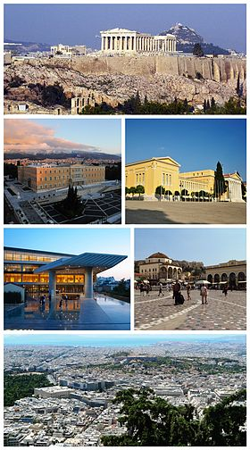
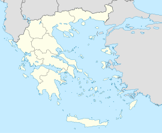
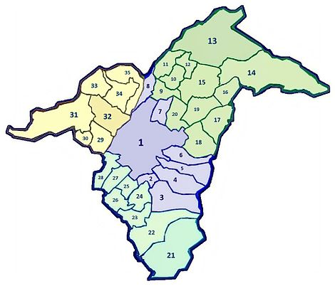

Athens

| Athens Αθήνα |
||
|---|---|---|
| 
From upper left: the Acropolis, the Hellenic Parliament, the Zappeion, the Acropolis Museum, Monastiraki Square, Athens view towards the sea
|
||
|
||
|

Athens
|
||
| Coordinates: 37°58′N 23°43′E / 37.967°N 23.717°ECoordinates: 37°58′N 23°43′E / 37.967°N 23.717°E | ||
| Country | Greece | |
| Geographic region | Central Greece | |
| Administrative region | Attica | |
| Regional unit | Central Athens | |
| Districts | 7 | |
| Government | ||
| • Mayor | Giorgos Kaminis (Independent; since 29 December 2010) | |
| Area | ||
| • Urban | 412 km2 (159 sq mi) | |
| • Metro | 2,928.717 km2 (1,130.784 sq mi) | |
| • Municipality | 38.964 km2 (15.044 sq mi) | |
| Highest elevation | 338 m (1,109 ft) | |
| Lowest elevation | 70 m (230 ft) | |
| Population (2011)[1] | ||
| • Urban | 3,090,508 | |
| • Urban density | 7,500/km2 (19,000/sq mi) | |
| • Metro | 3,753,783 | |
| • Metro density | 1,300/km2 (3,300/sq mi) | |
| • Municipality | 664,046 | |
| • Municipality density | 17,000/km2 (44,000/sq mi) | |
| Community | ||
| Time zone | EET (UTC+2) | |
| • Summer (DST) | EEST (UTC+3) | |
| Postal code | 10x xx, 11x xx, 120 xx | |
| Area code(s) | 21 | |
| Vehicle registration | Yxx, Zxx, Ixx | |
| Website | www.cityofathens.gr | |

Athens (/ˈæθɨnz/;[2] Modern Greek: Αθήνα, Athína, [aˈθina] ( listen); Ancient Greek: Ἀθῆναι, Athēnai) is the capital and largest city of Greece. Athens dominates the Attica region and is one of the world's oldest cities, with its recorded history spanning around 3,400 years, and the earliest human presence around the 11th–7th millennium BC.[3] Classical Athens was a powerful city-state that emerged in conjunction with the seagoing development of the port of Piraeus. A centre for the arts, learning and philosophy, home of Plato's Academy and Aristotle's Lyceum,[4][5] it is widely referred to as the cradle of Western civilization and the birthplace of democracy,[6][7] largely because of its cultural and political impact on the European continent and in particular the Romans.[8] In modern times, Athens is a large cosmopolitan metropolis and central to economic, financial, industrial, maritime, political and cultural life in Greece. In 2015, Athens was ranked the world's 29th richest city by purchasing power[9] and the 67th most expensive[10] in a UBS study.
Athens is recognised as a global city because of its geo-strategic location and its importance in shipping, finance, commerce, media, entertainment, arts, international trade, culture, education and tourism. It is one of the biggest economic centres in southeastern Europe, with a large financial sector, and its port Piraeus is the largest passenger port in Europe,[11][12][13][14] and the second largest in the world.[15] The municipality (City) of Athens had a population of 664,046 (in 2011,[1] 796,442 in 2004)[16] within its administrative limits, and a land area of 39 km2 (15 sq mi).[17] The urban area of Athens (Greater Athens and Greater Piraeus) extends beyond its administrative municipal city limits, with a population of 3,090,508 (in 2011)[18] over an area of 412 km2 (159 sq mi).[17] According to Eurostat in 2004, the Athens Larger Urban Zone (LUZ) was the 7th most populous LUZ in the European Union (the 5th most populous capital city of the EU), with a population of 4,013,368. Athens is also the southernmost capital on the European mainland.
The heritage of the classical era is still evident in the city, represented by ancient monuments and works of art, the most famous of all being the Parthenon, considered a key landmark of early Western civilization. The city also retains Roman and Byzantine monuments, as well as a smaller number of Ottoman monuments.
Athens is home to two UNESCO World Heritage Sites, the Acropolis of Athens and the medieval Daphni Monastery. Landmarks of the modern era, dating back to the establishment of Athens as the capital of the independent Greek state in 1834, include the Hellenic Parliament (19th century) and the Athens Trilogy, consisting of the National Library of Greece, the Athens University and the Academy of Athens. Athens was the host city of the first modern-day Olympic Games in 1896, and 108 years later it welcomed home the 2004 Summer Olympics.[19] Athens is home to the National Archeological Museum, featuring the world's largest collection of ancient Greek antiquities, as well as the new Acropolis Museum.
Contents
[hide]- 1 Etymology
- 2 History
- 3 Geography
- 4 Administration
- 5 Cityscape
- 6 Economy
- 7 Demographics
- 8 Culture and contemporary life
- 9 Education
- 10 Environment
- 11 Transport
- 12 Olympic Games
- 13 Special Olympics
- 14 International relations
- 15 Other locations named after Athens
- 16 See also
- 17 References
- 18 External links
Etymology
In Ancient Greek, Athens' name was Ἀθῆναι (Athēnai, pronounced [a.tʰɛ̂ː.nai̯] in Classical Attic) a plural. In earlier Greek, such as Homeric Greek, the name was in the singular form, as Ἀθήνη (Athēnē)[20] and was then rendered in the plural, like those of Θῆβαι (Thēbai) and Μυκῆναι (Μukēnai). The root of the word is probably not of Greek or Indo-European origin, and is a possible remnant of the Pre-Greek substrate of Attica,[21] as with the name of the goddess Athena (Attic Ἀθηνᾶ Athēnā, Ionic Ἀθήνη Athēnē and Doric Ἀθάνα Athānā), who was always related to the city of Athens. During the medieval period the name of the city was rendered once again in the singular as Ἀθήνα. However, because of the conservatism of the written language, Ἀθῆναι [aˈθine] remained the official name of the city until the abandonment of Katharevousa in the 1970s, when Ἀθήνα became the official name.
Previously, there had been other etymologies by scholars of the 19th century. Lobeck proposed as the root of the name the word ἄθος (athos) or ἄνθος (anthos) meaning flower, to denote Athens as the flowering city. On the other hand, Döderlein proposed the stem of the verb θάω, stem θη- (thaō, stem thē-, "to suck") to denote Athens as having fertile soil.[22]
An etiological myth explaining how Athens has acquired this name was well known among ancient Athenians and even became the theme of the sculpture on the West pediment of the Parthenon. The goddess Athena and the god Poseidon had many disagreements and battles between them, and one of these was a race to be the Patron God of the city. In an attempt to compel the people, Poseidon created a salt water spring by striking the ground with his trident, symbolizing naval power. However, when Athena created the olive tree, symbolizing peace and prosperity, the Athenians, under their ruler Cecrops, accepted the olive tree and named the city after Athena.
The city is sometimes referred in Greek as "τὸ κλεινὸν ἄστυ", which means in English the glorious city, or simply as "η πρωτεύουσα" (protevousa), 'the capital'.
History
The oldest known human presence in Athens is the Cave of Schist, which has been dated to between the 11th and 7th millennium BC.[23] Athens has been continuously inhabited for at least 7000 years.[24][25] By 1400 BC the settlement had become an important centre of the Mycenaean civilization and the Acropolis was the site of a major Mycenaean fortress, whose remains can be recognised from sections of the characteristic Cyclopean walls.[26] Unlike other Mycenaean centers, such as Mycenae and Pylos, it is not known whether Athens suffered destruction in about 1200 BC, an event often attributed to a Dorian invasion, and the Athenians always maintained that they were "pure" Ionians with no Dorian element. However, Athens, like many other Bronze Age settlements, went into economic decline for around 150 years afterwards.
Iron Age burials, in the Kerameikos and other locations, are often richly provided for and demonstrate that from 900 BC onwards Athens was one of the leading centres of trade and prosperity in the region.[27] The leading position of Athens may well have resulted from its central location in the Greek world, its secure stronghold on the Acropolis and its access to the sea, which gave it a natural advantage over inland rivals such as Thebes and Sparta.
By the 6th century BC, widespread social unrest led to the reforms of Solon. These would pave the way for the eventual introduction of democracy by Cleisthenes in 508 BC. Athens had by this time become a significant naval power with a large fleet, and helped the rebellion of the Ionian cities against Persian rule. In the ensuing Greco-Persian Wars Athens, together with Sparta, led the coalition of Greek states that would eventually repel the Persians, defeating them decisively at Marathon in 490 BC, and crucially at Salamis in 480 BC. However, this did not prevent Athens from being captured and sacked twice by the Persians within one year, after a heroic resistance at Thermopylae by Spartans and other Greeks led by King Leonidas,[28] after both Boeotia and Attica fell to the Persians.
The decades that followed became known as the Golden Age of Athenian democracy, during which time Athens became the leading city of Ancient Greece, with its cultural achievements laying the foundations of Western civilization. The playwrights Aeschylus, Sophocles and Euripides flourished in Athens during this time, as did the historians Herodotus and Thucydides, the physician Hippocrates, and the philosopher Socrates. Guided by Pericles, who promoted the arts and fostered democracy, Athens embarked on an ambitious building program that saw the construction of the Acropolis of Athens (including the Parthenon), as well as empire-building via the Delian League. Originally intended as an association of Greek city-states to continue the fight against the Persians, the league soon turned into a vehicle for Athens's own imperial ambitions. The resulting tensions brought about the Peloponnesian War (431–404 BC), in which Athens was defeated by its rival Sparta.
By the mid-4th century BC, the northern Greek kingdom of Macedon was becoming dominant in Athenian affairs. In 338 BC the armies of Philip II defeated an alliance of some of the Greek city-states including Athens and Thebes at the Battle of Chaeronea, effectively ending Athenian independence. Later, under Rome, Athens was given the status of a free city because of its widely admired schools. The Roman emperor Hadrian, in the 2nd century AD, constructed a library, a gymnasium, an aqueduct which is still in use, several temples and sanctuaries, a bridge and financed the completion of the Temple of Olympian Zeus.
By the end of Late Antiquity, the city experienced decline followed by recovery in the second half of the Middle Byzantine Period, in the 9th to 10th centuries AD, and was relatively prosperous during the Crusades, benefiting from Italian trade. After the Fourth Crusade the Duchy of Athens was established. In 1458 it was conquered by the Ottoman Empire and entered a long period of decline.
Following the Greek War of Independence and the establishment of the Greek Kingdom, Athens was chosen as the capital of the newly independent Greek state in 1834, largely because of historical and sentimental reasons. At the time it was a town of modest size built around the foot of the Acropolis. The first King of Greece, Otto of Bavaria, commissioned the architects Stamatios Kleanthis and Eduard Schaubert to design a modern city plan fit for the capital of a state.
The first modern city plan consisted of a triangle defined by the Acropolis, the ancient cemetery of Kerameikos and the new palace of the Bavarian king (now housing the Greek Parliament), so as to highlight the continuity between modern and ancient Athens. Neoclassicism, the international style of this epoch, was the architectural style through which Bavarian, French and Greek architects such as Hansen, Klenze, Boulanger or Kaftantzoglou designed the first important public buildings of the new capital. In 1896 Athens hosted the first modern Olympic Games. During the 1920s a number of Greek refugees, expelled from Asia Minor after the Greco-Turkish War (1919-1922), swelled Athens's population; nevertheless it was most particularly following World War II, and from the 1950s and 1960s, that the population of the city exploded, and Athens experienced a gradual expansion.
In the 1980s it became evident that smog from factories and an ever increasing fleet of automobiles, as well as a lack of adequate free space due to congestion, had evolved into the city's most important challenge. A series of anti-pollution measures taken by the city's authorities in the 1990s, combined with a substantial improvement of the city's infrastructure (including the Attiki Odos motorway, the expansion of the Athens Metro, and the new Athens International Airport), considerably alleviated pollution and transformed Athens into a much more functional city. In 2004 Athens hosted the 2004 Summer Olympics.
Geography
Geology

Athens sprawls across the central plain of Attica that is often referred to as the Athens or Attica Basin (Greek: Λεκανοπέδιο Αττικής). The basin is bounded by four large mountains: Mount Aegaleo to the west, Mount Parnitha to the north, Mount Penteli to the northeast and Mount Hymettus to the east.[29] Beyond Mount Aegaleo lies the Thriasian plain, which forms an extension of the central plain to the west. The Saronic Gulf lies to the southwest. Mount Parnitha is the tallest of the four mountains (1,413 m (4,636 ft)),[30] and has been declared a national park.
Athens is built around a number of hills. Lycabettus is one of the tallest hills of the city proper and provides a view of the entire Attica Basin. The geomorphology of Athens is deemed to be one of the most complex in the world because its mountains cause a temperature inversion phenomenon which, along with the Greek Government's difficulties controlling industrial pollution, was responsible for the air pollution problems the city has faced.[25] This issue is not unique to Athens; for instance, Los Angeles and Mexico City also suffer from similar geomorphology inversion problems.[25]
The Cephissus river,the Ilisos and the Eridanos stream are the historical rivers of Athens.
Climate
Athens has a subtropical Mediterranean climate (Köppen Csa) and receives just enough annual precipitation to avoid Köppen's BSh (semi-arid climate) classification. The dominant feature of Athens's climate is alternation between prolonged hot and dry summers and mild winters with moderate rainfall.[31] With an average of 414.1 millimetres (16.30 in) of yearly precipitation, rainfall occurs largely between the months of October and April. July and August are the driest months, where thunderstorms occur sparsely once or twice a month. Winters are mild and rainy, with a January average of 8.9 °C (48.0 °F); in Nea Filadelfeia and 10.3 °C (50.5 °F) in Hellinikon; Snowstorms are infrequent but can cause disruption when they occur. Snowfalls are more frequent in the northern suburbs of the city.[32]
The annual precipitation of Athens is typically lower than in other parts of Greece, mainly in western Greece. As an example, Ioannina receives around 1,300 mm (51 in) per year, and Agrinio around 800 mm (31 in) per year. Daily average highs for July (1955–2004) have been measured at 33.7 °C (92.7 °F) at Nea Filadelfeia weather station,[33] but other parts of the city may be even warmer, in particular its western areas partly because of industrialization and partly because of a number of natural factors, knowledge of which has been available from the mid-19th century.[34][35][36] Temperatures often surpass 38 °C (100 °F) during the city's notorious heatwaves.[29][37]
Athens is affected by the urban heat island effect in some areas which is caused by human activity,[38][39] altering its temperatures compared to the surrounding rural areas,[40][41][42][43] and bearing detrimental effects on energy usage, expenditure for cooling,[44][45] and health.[39] The urban heat island of the city has also been found to be partially responsible for alterations of the climatological temperature time-series of specific Athens meteorological stations, because of its impact on the temperatures and the temperature trends recorded by some meteorological stations.[46][47][48][49][50] On the other hand, specific meteorological stations, such as the National Garden station and Thiseio meteorological station, are less affected or do not experience the urban heat island.[40][51]
Athens holds the World Meteorological Organization record for the highest temperature ever recorded in Europe, at 48.0 °C (118.4 °F), which was recorded in the Elefsina and Tatoi suburbs of Athens on 10 July 1977.[52]
| [hide]Climate data for Athens | |||||||||||||
|---|---|---|---|---|---|---|---|---|---|---|---|---|---|
| Month | Jan | Feb | Mar | Apr | May | Jun | Jul | Aug | Sep | Oct | Nov | Dec | Year |
| Average high °C (°F) | 13.3 (55.9) |
13.9 (57) |
16.6 (61.9) |
20.0 (68) |
25.2 (77.4) |
30.4 (86.7) |
33.4 (92.1) |
33.7 (92.7) |
28.7 (83.7) |
23.5 (74.3) |
18.8 (65.8) |
14.7 (58.5) |
22.7 (72.9) |
| Daily mean °C (°F) | 9.9 (49.8) |
10.2 (50.4) |
12.5 (54.5) |
15.7 (60.3) |
20.5 (68.9) |
25.5 (77.9) |
28.5 (83.3) |
28.6 (83.5) |
24.1 (75.4) |
19.5 (67.1) |
15.1 (59.2) |
11.7 (53.1) |
18.5 (65.3) |
| Average low °C (°F) | 6.8 (44.2) |
6.8 (44.2) |
8.8 (47.8) |
11.7 (53.1) |
15.8 (60.4) |
20.6 (69.1) |
23.6 (74.5) |
23.8 (74.8) |
19.8 (67.6) |
15.9 (60.6) |
11.7 (53.1) |
8.8 (47.8) |
14.5 (58.1) |
| Average rainfall mm (inches) | 56.9 (2.24) |
46.7 (1.839) |
40.7 (1.602) |
30.8 (1.213) |
22.7 (0.894) |
10.6 (0.417) |
5.8 (0.228) |
6.0 (0.236) |
13.9 (0.547) |
52.6 (2.071) |
58.3 (2.295) |
69.1 (2.72) |
414.1 (16.303) |
| Average rainy days | 12.6 | 10.4 | 10.2 | 8.1 | 6.2 | 3.7 | 1.9 | 1.7 | 3.3 | 7.2 | 9.7 | 12.1 | 87.1 |
| Average relative humidity (%) | 70.7 | 68.9 | 67.0 | 62.9 | 59.5 | 52.6 | 48.7 | 47.6 | 57.2 | 64.6 | 71.9 | 71.8 | 62.0 |
| Mean monthly sunshine hours | 158.1 | 168.0 | 189.1 | 225.0 | 303.8 | 360.0 | 384.4 | 359.6 | 252.0 | 198.4 | 144.0 | 105.4 | 2,847.8 |
| Source: Climatebase (temperatures, RH, and sun 1980–2000)[53] World Meteorological Organization (precipitation 1955–1997),[54] | |||||||||||||
| [hide]Climate data for National Observatory of Athens (Thiseio), 107 m asl (1971–2000), (1961–1990) rain | |||||||||||||
|---|---|---|---|---|---|---|---|---|---|---|---|---|---|
| Month | Jan | Feb | Mar | Apr | May | Jun | Jul | Aug | Sep | Oct | Nov | Dec | Year |
| Average high °C (°F) | 13.0 (55.4) |
13.7 (56.7) |
16.1 (61) |
20.5 (68.9) |
25.8 (78.4) |
30.6 (87.1) |
33.1 (91.6) |
32.8 (91) |
29.2 (84.6) |
23.5 (74.3) |
18.1 (64.6) |
14.4 (57.9) |
22.57 (72.63) |
| Average low °C (°F) | 6.7 (44.1) |
6.8 (44.2) |
8.2 (46.8) |
11.6 (52.9) |
16.0 (60.8) |
20.4 (68.7) |
22.8 (73) |
22.5 (72.5) |
19.4 (66.9) |
15.1 (59.2) |
11.2 (52.2) |
8.2 (46.8) |
14.07 (57.34) |
| Average precipitation mm (inches) | 44.6 (1.756) |
48.3 (1.902) |
42.6 (1.677) |
28.2 (1.11) |
17.2 (0.677) |
9.7 (0.382) |
4.2 (0.165) |
4.6 (0.181) |
11.9 (0.469) |
47.7 (1.878) |
50.6 (1.992) |
66.6 (2.622) |
376.2 (14.811) |
| Source: National Observatory of Athens[55] | |||||||||||||
Administration
Athens became the capital of Greece in 1834, following Nafplion, which was the provisional capital from 1829. The municipality (City) of Athens is also the capital of the Attica region. Athens can refer either to the municipality of Athens, to Greater Athens, or to the entire Athens Urban Area.
Attica region
The Athens Metropolitan Area, sprawling over 2,928.717 km2 (1,131 sq mi), is located within the 3,808 km2 (1,470 sq mi) Attica region. The region encompasses the most populated region of Greece, reaching 3,827,624 inhabitants in 2011,[1] while it is however one of the smallest regions in the country.
The Attica region itself is split into eight regional units, out of which the first four form Greater Athens, while the regional unit of Piraeus forms Greater Piraeus. Together they make up the contiguous built up Athens Urban Area, spanning over 412 km2 (159 sq mi).[56]
- North Athens (Greater Athens, Athens Urban Area)
- West Athens (Greater Athens, Athens Urban Area)
- Central Athens (Greater Athens, Athens Urban Area)
- South Athens (Greater Athens, Athens Urban Area)
- Piraeus (Greater Piraeus, Athens Urban Area)
- East Attica (Athens Metropolitan Area)
- West Attica (Athens Metropolitan Area)
- Attica Islands
Until 2010, the first four regional units above also made up the abolished Athens Prefecture (what is referred to as Greater Athens), which was the most populous of the Prefectures of Greece at the time, accounting for 2,640,701 people (in 2011)[1] within an area of 361 km2 (139 sq mi).[17]
Municipality (City) of Athens>
The municipality (City) of Athens is the most populous in Greece, with a population of 664,046 people (in 2011)[1] and an area of 39 km2 (15 sq mi),[17] forming the core of the Athens Urban Area within the Attica Basin. The current mayor of Athens is Giorgos Kaminis. The municipality is divided into seven municipal districts which are mainly used for administrative purposes.
Population data for the 7 municipal districts of Athens (2001 census):[57]
1st: 97,570
2nd: 110,069
3rd: 48,305
4th: 87,672
5th: 95,234
6th: 147,181
7th: 159,483
For the Athenians the most popular way of dividing the City proper is through its neighbourhoods such as Pagkrati, Ambelokipi, Exarcheia, Patissia, Ilissia, Petralona, Koukaki and Kypseli, each with its own distinct history and characteristics.
The Athens municipality also forms the core and center of Greater Athens which consists of the Athens municipality and 34 more municipalities, which are divided in the four regional units (North, West, Central and South Athens) mentioned above.
|
|||||||||||||||||||||||
|
 |
|
|||||||||||||||||||||
|
|||||||||||||||||||||||
The municipalities of Greater Athens along with the municipalities within Greater Piraeus (regional unit of Piraeus) form the Athens Urban Area, while the larger metropolitan area includes several additional suburbs and towns surrounding the dense urban area of the Greek capital.
Cityscape
Architecture
Athens incorporates architectural styles ranging from Greco-Roman and Neoclassical to modern. They are often to be found in the same areas, as Athens is not marked by a uniformity of architectural style.
For the greatet part of the 19th century Neoclassicism dominated Athens, as well as some deviations from it such as Eclecticism, especially in the early 20th century. Thus, the Hellenic Parliament was the first important public building to be built, between 1836 and 1843. Later in the mid and late 19th century, Theophil Freiherr von Hansen and Ernst Ziller took part in the construction of many neoclassical buildings such as the Athens Academy and the Zappeion Hall. Ziller also designed many private mansions in the centre of Athens which gradually became public, usually through donations, such as Schliemann's Iliou Melathron.
Beginning in the 1920s, Modern architecture including Bauhaus and Art Deco began to exert an influence on almost all Greek architects, and buildings both public and private were constructed in accordance with these styles. Localities with a great number of such buildings include Kolonaki, and some areas of the centre of the city; neighbourhoods developed in this period include Kypseli.[58]
In the 1950s and 1960s during the extension and development of Athens, other modern movements such as the International style played an important role. The centre of Athens was largely rebuilt, leading to the demolition of a number of neoclassical buildings. The architects of this era employed materials such as glass, marble and aluminium, and many blended modern and classical elements.[59] After World War II, internationally known architects to have designed and built in the city included Walter Gropius, with his design for the US Embassy, and, among others, Eero Saarinen, in his postwar design for the east terminal of the Ellinikon Airport.
Notable Greek architects of the 1930s–1960s included Konstantinos Doxiadis, Dimitris Pikionis, Pericles A. Sakellarios, Aris Konstantinidis, and others.
City of Athens neighbourhoods
The municipality of Athens, the city centre of the Athens Urban Area, is divided into several districts: Omonoia, Syntagma, Exarcheia, Agios Nikolaos, Neapolis, Lykavittos, Lofos Strefi, Lofos Finopoulou, Lofos Filopappou, Pedion Areos, Metaxourgeio, Aghios Kostantinos, Larissa Station, Kerameikos, Psiri, Monastiraki, Gazi, Thission, Kapnikarea, Aghia Irini, Aerides, Anafiotika, Plaka, Acropolis, Pnyka, Makrygianni, Lofos Ardittou, Zappeion, Aghios Spyridon, Pangration, Kolonaki, Dexameni, Evaggelismos, Gouva, Aghios Ioannis, Neos Kosmos, Koukaki, Kynosargous, Fix, Ano Petralona, Kato Petralona, Rouf, Votanikos, Profitis Daniil, Akadimia Platonos, Kolonos, Kolokynthou, Attikis Square, Lofos Skouze, Sepolia, Kypseli, Aghios Meletios, Nea Kypseli, Gyzi, Polygono, Ampelokipoi, Panormou-Gerokomeio, Pentagono, Ellinorosson, Nea Filothei, Ano Kypseli, Tourkovounia-Lofos Patatsou, Lofos Elikonos, Koliatsou, Thymarakia, Kato Patisia, Treis Gefyres, Aghios Eleftherios, Ano Patisia, Kypriadou, Prompona, Aghios Panteleimonas, Pangrati, Goudi and Ilisia.
- Omonoia, Omonoia Square, (Greek: Πλατεία Ομονοίας) is the oldest square in Athens. It is surrounded by hotels and fast food outlets, and contains a train station used by the Athens Metro and the Ilektrikos, named Omonoia Station. The square is the focus for celebration of sporting victories, as seen after the country's winning of the Euro 2004 and the Eurobasket 2005 tournaments.
- Metaxourgeio (Greek: Μεταξουργείο) is a neighborhood of Athens. The neighborhood is located north of the historical centre of Athens, between Kolonos to the east and Kerameikos to the west, and north of Gazi. Metaxourgeio is frequently described as a transition neighborhood. After a long period of abandonment in the late 20th century, the area is acquiring a reputation as an artistic and fashionable neighborhood following the opening of art galleries, museums, restaurants and cafes. [1] Local efforts to beautify and invigorate the neighborhood have reinforced a sense of community and artistic expression. Anonymous art pieces containing quotes and statements in both English and Ancient Greek have sprung up throughout the neighborhood, bearing statements such as "Art for art's sake" (Τέχνη τέχνης χάριν). Guerilla gardening has also helped to beautify the area.
- Psiri and Gazi – The reviving Psiri (Greek: Ψυρρή) neighbourhood – also known as Athens's "meat packing district" – is dotted with renovated former mansions, artists' spaces, and small gallery areas. A number of its renovated buildings also host fashionable bars, making it a hotspot for the city in the last decade, while live music restaurants known as "rebetadika", after rebetiko, a unique form of music that blossomed in Syros and Athens from the 1920s until the 1960s, are to be found. Rebetiko is admired by many, and as a result rebetadika are often crammed with people of all ages who will sing, dance and drink till dawn.
The Gazi (Greek: Γκάζι) area, one of the latest in full redevelopment, is located around a historic gas factory, now converted into the Technopolis cultural multiplex, and also includes artists' areas, small clubs, bars and restaurants, as well as Athens's "Gay Village". The metro's expansion to the western suburbs of the city has brought easier access to the area since spring 2007, as the blue line now stops at Gazi (Kerameikos station).
- Syntagma, Syntagma Square, (Greek: Σύνταγμα/Constitution Square), is the capital's central and largest square, lying adjacent to the Greek Parliament (the former Royal Palace) and the city's most notable hotels. Ermou Street, an approximately one kilometer (0.62 miles) long pedestrian road connecting Syntagma Square to Monastiraki, is a consumer paradise for both Athenians and tourists. Complete with fashion shops and shopping centres promoting most international brands, it now finds itself in the top five most expensive shopping streets in Europe, and the tenth most expensive retail street in the world.[60] Nearby, the renovated Army Fund building in Panepistimiou Street includes the "Attica" department store and several upmarket designer stores.
- Plaka, Monastiraki, and Thission – Plaka (Greek: Πλάκα), lying just beneath the Acropolis, is famous for its plentiful neoclassical architecture, making up one of the most scenic districts of the city. It remains a prime tourist destination with tavernas, live performances and street salesmen. Nearby Monastiraki (Greek: Μοναστηράκι), for its part, is known for its string of small shops and markets, as well as its crowded flea market and tavernas specialising in souvlaki. Another district known for its student-crammed, stylish cafés is Theseum or Thission (Greek: Θησείο), lying just west of Monastiraki. Thission is home to the ancient Temple of Hephaestus, standing atop a small hill. This area also has a picturesque 11th-century Byzantine church, as well as a 15th-century Ottoman mosque.
- Exarcheia (Greek: Εξάρχεια), located north of Kolonaki, is the location of the city's anarchist scene and as a student quarter with cafés, bars and bookshops. Exarcheia is home to the Athens Polytechnic and the National Archaeological Museum; it also contains important buildings of several 20th-century styles: Neoclassicism, Art Deco and Early Modernism (including Bauhaus influences).[citation needed]
- Kolonaki (Greek: Κολωνάκι) is the area at the base of Lycabettus hill, full of boutiques catering to well-heeled customers by day, and bars and more fashionable restaurants by night, with galleries and museums. This is often regarded as one of the more prestigious areas of the capital.
Urban and suburban municipalities

The Athens Metropolitan Area consists of 58[18] densely populated municipalities, sprawling around the municipality of Athens (the city centre) in virtually all directions. For the Athenians, all the urban municipalities surrounding the city centre are called suburbs. According to their geographic location in relation to the City of Athens, the suburbs are divided into four zones; the northern suburbs (including Agios Stefanos, Dionysos, Ekali, Nea Erythraia, Kifissia, Maroussi, Pefki, Lykovrysi, Metamorfosi, Nea Ionia, Nea Filadelfeia, Irakleio, Vrilissia, Melissia, Penteli, Chalandri, Agia Paraskevi, Galatsi, Psychiko and Filothei); the southern suburbs (including Alimos, Nea Smyrni, Moschato, Kallithea, Agios Dimitrios, Palaio Faliro, Elliniko, Glyfada, Argyroupoli, Ilioupoli, Voula and Vouliagmeni); the eastern suburbs (including Zografou, Dafni, Vyronas, Kaisariani, Cholargos and Papagou); and the western suburbs (including Peristeri, Ilion, Egaleo, Agia Varvara, Chaidari, Petroupoli, Agioi Anargyroi and Kamatero).
The Athens city coastline, extending from the major commercial port of Piraeus to the southernmost suburb of Varkiza for some 25 km (20 mi),[61] is also connected to the city centre by a tram.
In the northern suburb of Maroussi, the upgraded main Olympic Complex (known by its Greek acronym OAKA) dominates the skyline. The area has been redeveloped according to a design by the Spanish architect Santiago Calatrava, with steel arches, landscaped gardens, fountains, futuristic glass, and a landmark new blue glass roof which was added to the main stadium. A second Olympic complex, next to the sea at the beach of Palaio Faliro, also features modern stadia, shops and an elevated esplanade. Work is underway to transform the grounds of the old Athens Airport – named Elliniko – in the southern suburbs, into one of the largest landscaped parks in Europe, to be named the Hellenikon Metropolitan Park.[62]
Many of the southern suburbs (such as Alimos, Palaio Faliro, Elliniko, Voula, Vouliagmeni and Varkiza) host a number of sandy beaches, most of which are operated by the Greek National Tourism Organisation and require an entrance fee. Casinos operate on both Mount Parnitha, some 25 km (16 mi)[63] from downtown Athens (accessible by car or cable car), and the nearby town of Loutraki (accessible by car via the Athens – Corinth National Highway, or the suburban rail service Proastiakos).
Parks and zoos
Parnitha National Park is punctuated by well-marked paths, gorges, springs, torrents and caves dotting the protected area. Hiking and mountain-biking in all four mountains are popular outdoor activities for residents of the city. The National Garden of Athens was completed in 1840 and is a green refuge of 15.5 hectares in the centre of the Greek capital. It is to be found between the Parliament and Zappeion buildings, the latter of which maintains its own garden of seven hectares.
Parts of the city centre have been redeveloped under a masterplan called the Unification of Archeological Sites of Athens, which has also gathered funding from the EU to help enhance the project.[64][65] The landmark Dionysiou Areopagitou Street has been pedestrianised, forming a scenic route. The route starts from the Temple of Olympian Zeus at Vasilissis Olgas Avenue, continues under the southern slopes of the Acropolis near Plaka, and finishes just beyond the Temple of Hephaestus in Thiseio. The route in its entirety provides visitors with views of the Parthenon and the Agora (the meeting point of ancient Athenians), away from the busy city centre.
The hills of Athens also provide green space. Lycabettus, Philopappos hill and the area around it, including Pnyx and Ardettos hill, are planted with pines and other trees, with the character of a small forest rather than typical metropolitan parkland. Also to be found is the Pedion tou Areos (Field of Mars) of 27.7 hectares, near the National Archaeological Museum.
Athens' largest zoo is the Attica Zoological Park, a 20-hectare (49-acre) private zoo located in the suburb of Spata. The zoo is home to around 2000 animals representing 400 species, and is open 365 days a year. Smaller zoos exist within public gardens or parks, such as the zoo within the National Garden of Athens.
Economy
| This section requires expansion. (January 2012) |
Athens is the financial capital of Greece, and multinational companies such as Ericsson, Siemens, Motorola and Coca-Cola have their regional research and development headquarters there.
Demographics

Mycenean Athens in 1600–1100 BC could have reached the size of Tiryns; that would put the population at the range of 10,000 - 15,000.[66] During the Greek Dark Ages the population of Athens was around 4,000 people. In 700 BC the population grew to 10,000. In 500 BC the area probably contained 200,000 people. During the classical period the city's population is estimated from 150,000 - 350,000 and up to 610,000 according to Thucydides. When Demetrius of Phalerum conducted a population census in 317 BC the population was 21,000 free citizens, plus 10,000 resident aliens and 400,000 slaves. This suggests a total population of 431,000.[67][68][69][70][71][72][73][74][75]
The municipality of Athens has an official population of 664,046 people.[1] The four regional units that make up what is referred to as Greater Athens have a combined population of 2,640,701. They together with the regional unit of Piraeus (Greater Piraeus) make up the dense Athens Urban Area which reaches a total population of 3,090,508 inhabitants (in 2011).[18]
The ancient site of Athens is centred on the rocky hill of the acropolis. In ancient times the port of Piraeus was a separate city, but it has now been absorbed into the Athens Urban Area. The rapid expansion of the city, which continues to this day, was initiated in the 1950s and 1960s, because of Greece's transition from an agricultural to an industrial nation.[76] The expansion is now particularly toward the East and North East (a tendency greatly related to the new Eleftherios Venizelos International Airport and the Attiki Odos, the freeway that cuts across Attica). By this process Athens has engulfed many former suburbs and villages in Attica, and continues to do so. The table below shows the historical population of Athens in recent times.
| Year | City population | Urban population | Metro population | |||
|---|---|---|---|---|---|---|
| 1833 | 4,000[77] | – | – | |||
| 1870 | 44,500[77] | – | – | |||
| 1896 | 123,000[77] | – | – | |||
| 1921 (Pre-Population exchange) | 473,000[25] | – | – | |||
| 1921 (Post-Population exchange) | 718,000[77] | – | – | |||
| 1971 | 867,023 | - | 2,540,241 | [78] | – | – |
| 1981 | 885,737 | – | 3,369,443 | |||
| 1991 | 772,072 | 3,444,358 | 3,523,407 | [79] | ||
| 2001 | 745,514[80] | 3,165,823[80] | 3,761,810[80] | |||
| 2011 | 664,046 | 3,090,508 | 3,753,783[18] |
Details
The large City Centre of the Greek capital falls directly within the municipality of Athens, which is the largest in population size in Greece. Piraeus also forms a significant city centre on its own, within the Athens Urban Area and being the second largest in population size within it, with Peristeri and Kallithea following.
The Athens Urban Area today consists of 40 municipalities, 35 of which make up what is referred to as the Greater Athens municipalities, located within 4 regional units (North Athens, West Athens, Central Athens, South Athens); and a further 5, which make up the Greater Piraeus municipalities, located within the regional unit of Piraeus as mentioned above. The densely built up urban area of the Greek capital sprawls across 412 km2 (159 sq mi)[17] throughout the Attica Basin and has a total population of 3,074,160 (in 2011).
The Athens Metropolitan Area spans 2,928.717 km2 (1,131 sq mi) within the Attica region and includes a total of 58 municipalities, which are organized in 7 regional units (those outlined above, along with East Attica and West Attica), having reached a population of 3,737,550 based on the preliminary results of the 2011 census. Athens and Piraeus municipalities serve as the two metropolitan centres of the Athens Metropolitan Area.[81][82] There are also some inter-municipal centres serving specific areas. For example, Kifissia and Glyfada serve as inter-municipal centres for northern and southern suburbs respectively.
Culture and contemporary life

Archaeological hub
The city is a world centre of archaeological research. Apart from national institutions, such as Athens University, the Archaeological Society, several archaeological Museums, including the National Archaeological Museum, the Cycladic Museum, the Epigraphic Museum, the Byzantine Museum, as well as museums at the ancient Agora, Acropolis, Kerameikos, and Kerameikos Archaeological Museum. The city is also home to the Demokritos laboratory for Archaeometry, alongside regional and national archaeological authorities that form part of the Greek Department of Culture.
Athens hosts 17 Foreign Archaeological Institutes which promote and facilitate research by scholars from their home countries. As a result, Athens has more than a dozen archaeological libraries and three specialized archaeological laboratories, and is the venue of several hundred specialized lectures, conferences and seminars, as well as dozens of archaeological exhibitions, each year. At any given time, hundreds of international scholars and researchers in all disciplines of archaeology are to be found in the city.
Museums
Athens' most important museums include:
- the National Archaeological Museum, the largest archaeological museum in the country, and one of the most important internationally, as it contains a vast collection of antiquities; its artifacts cover a period of more than 5,000 years, from late Neolithic Age to Roman Greece;
- the Benaki Museum with its several branches for each of its collections including ancient, Byzantine, Ottoman-era, and Chinese art and beyond;
- the Byzantine and Christian Museum, one of the most important museums of Byzantine art;
- the Numismatic Museum, housing a major collection of ancient and modern coins;
- the Museum of Cycladic Art, home to an extensive collection of Cycladic art, including its famous figurines of white marble;
- the New Acropolis Museum, opened in 2009, and replacing the old museum on the Acropolis. The new museum has proved considerably popular; almost one million people visited during the summer period June–October 2009 alone. A number of smaller and privately owned museums focused on Greek culture and arts are also to be found.
- the Kerameikos Archaeological Museum, a museum which displays artifacts from the burial site of Kerameikos. Much of the pottery and other artifacts relate to Athenian attitudes towards death and the afterlife, throughout many ages.
- the Jewish Museum of Greece, a museum which describes the history and culture of the Greek Jewish community.
Tourism
Athens has been a destination for travellers since antiquity. Over the past decade, the city's infrastructure and social amenities have improved, in part because of its successful bid to stage the 2004 Olympic Games. The Greek Government, aided by the EU, has funded major infrastructure projects such as the state-of-the-art Eleftherios Venizelos International Airport,[83] the expansion of the Athens Metro system,[64] and the new Attiki Odos Motorway.[64]
Athens was voted as the third best European city to visit in 2015 by European Best Destination. More than 240,000 people voted.
Entertainment and performing arts
Athens is home to 148 theatrical stages, more than any other city in the world, including the ancient Odeon of Herodes Atticus, home to the Athens Festival, which runs from May to October each year.[84][85] In addition to a large number of multiplexes, Athens plays host to open air garden cinemas. The city also supports music venues, including the Athens Concert Hall (Megaron Moussikis), which attracts world class artists.[86] The Athens Planetarium,[87] located in Andrea Syngrou Avenue, is one of the largest and best equipped digital planetaria in the world.[88][89]
Sports
Athens has a long tradition in sports and sporting events, serving as home to the most important clubs in Greek sport and housing a large number of sports facilities. The city has also been host to sports events of international importance.
Athens has hosted the Summer Olympic Games twice, in 1896 and 2004. The 2004 Summer Olympics required the development of the Athens Olympic Stadium, which has since gained a reputation as one of the most beautiful stadiums in the world, and one of its most interesting modern monuments.[90] The biggest stadium in the country, it hosted two finals of the UEFA Champions League, in 1994 and 2007. Athens' other major stadium, located in the Piraeus area, is the Karaiskakis Stadium, a sports and entertainment complex, host of the 1971 UEFA Cup Winners' Cup Final. In 2004 Greece's national soccer team won the UEFA European Championship Finals in Portugal. In the final tie they beat the host nation Portugal 1:0.
Athens has hosted the Euroleague final three times, the first in 1985 and second in 1993, both at the Peace and Friendship Stadium, most known as SEF, a large indoor arena,[91] and the third time in 2007 at the Olympic Indoor Hall. Events in other sports such as athletics, volleyball, water polo etc., have been hosted in the capital's venues.
Athens is home to three European multi-sport clubs: Olympiacos, Panathinaikos, AEK Athens. In football, Olympiacos have dominated the domestic competitions, Panathinaikos made it to the 1971 European Cup Final, while AEK Athens is the other member of the big three. These clubs also have basketball teams; Panathinaikos and Olympiacos are among the top powers in European basketball, having won the Euroleague six times and three respectively, whilst AEK Athens was the first Greek team to win a European trophy in any team sport.
Other notable clubs within Athens are Athinaikos, Panionios, Atromitos, Apollon, Panellinios, Ethnikos Piraeus, Maroussi BC and Peristeri B.C.. Athenian clubs have also had domestic and international success in other sports.
The Athens area encompasses a variety of terrain, notably hills and mountains rising around the city, and the capital is the only major city in Europe to be bisected by a mountain range. Four mountain ranges extend into city boundaries and thousands of miles of trails criss-cross the city and neighbouring areas, providing exercise and wilderness access on foot and bike.
Beyond Athens and across the prefecture of Attica, outdoor activities include skiing, rock climbing, hang gliding and windsurfing. Numerous outdoor clubs serve these sports, including the Athens Chapter of the Sierra Club, which leads over 4,000 outings annually in the area.
| Notable sport clubs based inside the boundaries of Athens Municipality | ||||
|---|---|---|---|---|
| Club | Founded | Sports | District | Achievements |
| Panellinios G.S. | 1891 | Basketball , Volleyball, Handball, Track and Field and others | Kypseli | Panhellenic titles in Basketball, Volleyball, Handball, many honours in Track and Field |
| Apollon Smyrni | 1891 (originally in Smyrni) |
Football | Rizoupoli | Earlier long-time presence in A Ethniki |
| Ethnikos G.S. Athens | 1893 | Track and Field, Wrestling, Shooting and others | Zappeion | Many honours in Athletics and Wrestling |
| Panathinaikos | 1908 | Football, Basketball , Volleyball, Water Polo, Track and Field and others | Ampelokipoi | One of the most successful Greek clubs, many titles in several sports |
| Ilisiakos | 1927 | Football , Basketball | Ilisia | Earlier presence in A1 Ethniki basketball |
| Asteras Exarchion | 1928 (originally as Achilleus Neapoleos) | Football, Basketball | Exarcheia | Earlier presence in A1 Ethniki women basketball |
| Ampelokipoi B.C. | 1929 (originally as Hephaestus Athens) | Basketball | Ampelokipoi | Earlier presence in A1 Ethniki basketball |
| Thriamvos Athens | 1930 (originally as Doxa Athens) | Football, Basketball | Neos Kosmos | Panhellenic title in women Basketball |
| Sporting B.C. | 1936 | Basketball | Patisia | Many Panhellenic titles in women Basketball |
| Pagrati B.C. | 1938 | Basketball | Pagrati | Earlier presence in A1 Ethniki |
| PAO Rouf | 1947 | Football | Rouf | presence in Gamma Ethniki |
Beside the above clubs, inside the boundaries of Athens municipality there are some more clubs with presence in national divisions or notable action for short periods. Some of them are Petralona F.C.(el) (Petralona), football club founded in 1963, with earlier presence in Beta Ethniki, Attikos F.C.(el) (Kolonos), football club founded in 1919 with short presence in Gamma Ethniki, Athinais Kypselis(el) (Kypseli), football club founded in 1938 with short presence in Gamma Ethniki, Gyziakos (Gyzi), basketball club founded in 1937 with short presence in Beta Ethniki basketball and Aetos B.C.(el) (Agios Panteleimonas), basketball club founded in 1992 with current presence in A2 Ethniki Basketball. Another important Athenian sport club is the Athens Tennis Club founded in 1895 with important offer for the Greek tennis.[92]
Music

{kind=link}
{kind=link}
{kind=link}
{kind=link}
{kind=link}
{kind=link}
{kind=link}
{kind=link}
{kind=link}
{kind=link}
{kind=link}
{kind=link}
{kind=link}
{kind=link}
{kind=link}
{kind=link}
{kind=link}
{kind=link}
{kind=link}
{kind=link}
{kind=link}
{kind=link}
{kind=link}
{kind=link}
{kind=link}
{kind=link}
{kind=link}
{kind=link}
{kind=link}
{kind=link}
{kind=link}
{kind=link}
{kind=link}
{kind=link}
{kind=link}
{kind=link}
{kind=link}
{kind=link}
The most successful songs during the period 1870–1930 were the so-called Athenian serenades (Αθηναϊκές καντάδες), based on the Heptanesean kantádhes (καντάδες 'serenades'; sing.: καντάδα) and the songs performed on stage (επιθεωρησιακά τραγούδια 'theatrical revue songs') in revues, musical comedies, operettas and nocturnes that were dominating Athens' theatre scene.
Notable composers of operettas or nocturnes were Kostas Giannidis, Dionysios Lavrangas, Nikos Hatziapostolou, while Theophrastos Sakellaridis' The Godson remains probably the most popular operetta. Despite the fact that the Athenian songs were not autonomous artistic creations (in contrast with the serenades) and despite their original connection with mainly dramatic forms of Art, they eventually became hits as independent songs. Notable actors of Greek operettas, who made also a series of melodies and songs popular at that time, include Orestis Makris, Kalouta sisters, Vasilis Avlonitis, Afroditi Laoutari, Eleni Papadaki, Marika Nezer, Marika Krevata and others. After 1930, wavering among American and European musical influences as well as the Greek musical tradition. Greek composers begin to write music using the tunes of the tango, waltz, swing, foxtrot, some times combined with melodies in the style of Athenian serenades' repertory. Nikos Gounaris was probably the most renowned composer and singer of the time.
In 1923, after the population exchange between Greece and Turkey, many ethnic Greeks from Asia Minor fled to Athens as a result of the Greco-Turkish War. They settled in poor neighborhoods and brought with them Rebetiko music, making it popular also in Greece, which became later the base for the Laïko music. Other forms of song popular today in Greece are elafrolaika, entechno, dimotika, and skyladika.[93] Greece's most notable, and internationally famous, composers of Greek song, mainly of the entechno form, are Manos Hadjidakis and Mikis Theodorakis. Both composers have achieved fame in the west for their composition of film scores.[93]
Education
{kind=link}
{kind=link}
{kind=link}
Located on Panepistimiou Street, the old campus of the University of Athens, the National Library, and the Athens Academy form the "Athens Trilogy" built in the mid-19th century. Most of the university's workings have been moved to a much larger, modern campus located in the eastern suburb of Zografou. The second higher education institution in the city is the Athens Polytechnic School, found in Patission Street. This was the location where on 17 November 1973, more than 13 students were killed and hundreds injured inside the university during the Athens Polytechnic uprising,[94] against the military junta that ruled the nation from 21 April 1967 until 23 July 1974.
Other universities that lie within Athens are the Athens University of Economics and Business, the Panteion University, the Agricultural University of Athens and the University of Piraeus. There are overall eleven state-supported Institutions of Higher (or Tertiary) education located in the Metropolitan Area of Athens, these are by chronological order: Athens School of Fine Arts (1837), National Technical University of Athens (1837), National and Kapodistrian University of Athens (1837), Agricultural University of Athens (1920), Athens University of Economics and Business (1920), Panteion University of Social and Political Sciences (1927), University of Piraeus (1938), Technological Educational Institute of Piraeus (1976), Technological Educational Institute of Athens (1983), Harokopio University (1990), School of Pedagogical and Technological Education (2002). There are also several other private colleges, as they called formally in Greece, as the establishment of private universities is prohibited by the constitution. Many of them are accredited by a foreign state or university such as the American College of Greece and the Athens Campus of the University of Indianapolis.[95]
Environment
{kind=link}
By the late 1970s, the pollution of Athens had become so destructive that according to the then Greek Minister of Culture, Constantine Trypanis, "...the carved details on the five the caryatids of the Erechtheum had seriously degenerated, while the face of the horseman on the Parthenon's west side was all but obliterated."[96] A series of measures taken by the authorities of the city throughout the 1990s resulted in the improvement of air quality; the appearance of smog (or nefos as the Athenians used to call it) has become less common.
Measures taken by the Greek authorities throughout the 1990s have improved the quality of air over the Attica Basin. Nevertheless, air pollution still remains an issue for Athens, particularly during the hottest summer days. In late June 2007,[97] the Attica region experienced a number of brush fires,[97] including a blaze that burned a significant portion of a large forested national park in Mount Parnitha,[98] considered critical to maintaining a better air quality in Athens all year round.[97] Damage to the park has led to worries over a stalling in the improvement of air quality in the city.[97]
The major waste management efforts undertaken in the last decade (particularly the plant built on the small island of Psytalia) have improved water quality in the Saronic Gulf, and the coastal waters of Athens are now accessible again to swimmers. In January 2007, Athens faced a waste management problem when its landfill near Ano Liosia, an Athenian suburb, reached capacity.[99] The crisis eased by mid-January when authorities began taking the garbage to a temporary landfill.[99]
Transport
{kind=link}
{kind=link}
Athens is serviced by a variety of transportation means, forming the largest mass transit system of Greece. The Athens Mass Transit System consists of a large bus fleet, a trolleybus fleet that mainly serves Athens's city center, the city's Metro, a commuter rail service[100] and a tram network, connecting the southern suburbs to the city centre.[101]
Bus transport
Ethel (Greek: ΕΘΕΛ) (Etaireia Thermikon Leoforeion), or Thermal Bus Company, is the main operator of buses in Athens. Its network consists of about 300 bus lines which span the Athens Metropolitan Area,[102] with an operating staff of 5,327, and a fleet of 1,839 buses.[103] Of those 1,839 buses 416 run on compressed natural gas,[103] making up the largest fleet of natural gas-powered buses in Europe.[104]
Besides being served by a fleet of natural-gas and diesel buses, the Athens Urban Area is also served by trolleybuses — or electric buses, as they are referred to in the name of the operating company. The network is operated by Electric Buses of the Athens and Piraeus Region, or ILPAP (Greek: ΗΛΠΑΠ) and consists of 22 lines with an operating staff of 1,137.[105] All of the 366 trolleybuses are equipped to enable them to run on diesel in case of power failure.[105]
International and regional bus links are provided by KTEL from two InterCity Bus Terminals, Kifissos Bus Terminal A and Liosion Bus Terminal B, both located in the north-western part of the city. Kifissos provides connections towards the Peloponnese and Attica, whereas Liosion is used for most northerly mainland destinations.
Athens Metro
{kind=link}
The Athens Metro is more commonly known in Greece as the Attiko Metro (Greek: Αττικό Mετρό) and provides public transport throughout the Athens Urban Area. While its main purpose is transport, it also houses Greek artifacts found during construction of the system.[106] The Athens Metro has an operating staff of 387 and runs two of the three metro lines; namely the Red (line 2) and Blue (line 3) lines, which were constructed largely during the 1990s, with the initial sections opened in January 2000. All routes run entirely underground and a fleet of 42 trains consisting of 252 cars operate within the network,[107] with a daily occupancy of 550,000 passengers.[107]
The Red Line (line 2) runs from Anthoupoli station to Elliniko station and covers a distance of 17.5 km (10.9 mi).[107] The line connects the western suburbs of Athens with the southeast suburbs passing through the center of Athens. The line associated with Green (line 1) stations at Attiki and Omonoia Square station. Also the line connected with the Blue (line 3) at Syntagma Square station and connected with Tram at Syntagma Square, Sygrou-Fix and Agios Ioannis station.
The Blue Line (line 3) runs from the western suburbs, namely Agia Marina to the Egaleo station, through the central Monastiraki and Syntagma stations to Doukissis Plakentias avenue in the northeastern suburb of Halandri, covering a distance of 16 km (10 mi),[107] then ascending to ground level and reaching Eleftherios Venizelos International Airport, using the Suburban Railway infrastructure and extending its length to 39 km (24 mi).[107] The spring 2007 extension from Monastiraki westwards, to Egaleo, connected some of the main night life hubs of the city, namely the ones of Gazi (Kerameikos station) with Psirri (Monastiraki station) and the city centre (Syntagma station). Extensions are under construction to the west southwest suburbs of Athens, reaching to the port and the center of Piraeus. The new stations will be Agia Barvara, Koridallos, Nikaia, Maniatika, Piraeus and Dimotiko Theatro station. The stations will be ready in 2017, connecting the biggest port of Greece Piraeus Port with the biggest airport of Greece the Athens International Airport.
Electric railway (ISAP)
{kind=link}
Not run by the Athens Metro company, is the ISAP (Greek: ΗΣΑΠ), the Electric Railway Company line, which for many years served as Athens's primary urban rail transport. This is today the Green Line (line 1) of the Athens Metro network as shown on maps, and unlike the red and blue lines, ISAP has many above-ground sections on its route. This was the original metro line from Piraeus to Kifisia; serving 22 stations,[108] with a network length of 25.6 km (15.9 mi),[108] an operating staff of 730 and a fleet of 44 trains and 243 cars.[108] ISAP's occupancy rate is 600,000 passengers daily.[108]
The Green Line (line 1) now serves 24 stations, and forms the oldest line of the Athens metro network and for the most part runs at ground level,[109] connecting the port of Piraeus with the northern suburb of Kifissia. The line is set to be extended to Agios Stefanos, a suburb located 23 km (14 mi)[citation needed] to the north of Athens, reaching to 36 km (22 mi).[citation needed]
The Athens Metropolitan Railway system is managed by three companies; namely ISAP (line 1),[110] Attiko Metro (lines 2 & 3), while its commuter rail, the Proastiakós is considered as line 4.
Commuter/suburban rail (Proastiakos)
{kind=link}
The Athens commuter rail service, referred to as the "Proastiakós", connects Eleftherios Venizelos International Airport to the city of Corinth, 80 km (50 mi)[111] west of Athens, via Larissa station, the city's central rail station and the port of Piraeus. The service is sometimes considered the fourth line of the Athens Metro. The length of Athens's commuter rail network extends to 120 km (75 mi),[111] and is expected to stretch to 281 km (175 mi) by 2010.[111] The Proastiakos will be extended to Xylokastro west of Athens and Chalkida.[111]
Tram
{kind=link}
Athens Tram SA operates a fleet of 35 vehicles,[112] called 'Sirios',[93] which serve 48 stations,[112] employ 345 people with an average daily occupancy of 65,000 passengers.[112] The tram network spans a total length of 27 km (17 mi) and covers ten Athenian suburbs.[112] The network runs from Syntagma Square to the southwestern suburb of Palaio Faliro, where the line splits in two branches; the first runs along the Athens coastline toward the southern suburb of Voula, while the other heads toward the Piraeus district of Neo Faliro. The network covers the majority of the Saronic coastline.[113] Further extensions are planned towards the major commercial port of Piraeus.[112] The expansion to Piraeus will include 12 new stations, increase the overall length of tram route by 5.4 km (3 mi), and increase the overall transportation network.[114]
Athens International Airport
{kind=link}
Athens is served by the Athens International Airport (ATH), located near the town of Spata, in the eastern Messoghia plain, some 35 km (22 mi) east of Athens.[115] The airport, awarded the "European Airport of the Year 2004" Award,[116] is intended as an expandable hub for air travel in southeastern Europe and was constructed in 51 months, costing 2.2 billion euros. It employs a staff of 14,000.[116]
The airport is served by the Metro, the suburban rail, buses to Piraeus port, Athens' city centre and its suburbs, and also taxis. The airport accommodates 65 landings and take-offs per hour,[115] with its 24 passenger boarding bridges,[115] 144 check-in counters and broader 150,000 m2 (1,614,587 sq ft) main terminal;[115] and a commercial area of 7,000 m2 (75,347 sq ft) which includes cafes, duty-free shops,[116] and a small museum.
In 2014, the airport handled 15,196,369 passengers, an increase of 21.2% over the previous year of 2013.[117] Of those 15,196,369 passengers, 5,267,593 passed through the airport for domestic flights,[118] and 9,970,006 passengers travelled through for international flights.[118] Beyond the dimensions of its passenger capacity, ATH handled 205,294 total flights in 2007, or approximately 562 flights per day.[119]
Railways and ferry connections
Athens is the hub of the country's national railway system (OSE), connecting the capital with major cities across Greece and abroad (Istanbul, Sofia and Bucharest). Because of financial difficulties, all international rail services were suspended indefinitely in 2011. The Port of Piraeus connects Athens to the numerous Greek islands of the Aegean Sea, with ferries departing, while also serving the cruise ships that arrive.
Motorways
{kind=link}
{kind=link}
{kind=link}
Two main motorways of Greece begin in Athens, namely the A1/E75, which crosses through Athens's Urban Area from Piraeus, heading north towards Greece's second largest city, Thessaloniki; and the A8/E94 heading west, towards Patras, which incorporated the GR-8A. Before their completion much of the road traffic used the GR-1 and the GR-8.
Athens' Metropolitan Area is served by the motorway network of the Attiki Odos toll-motorway (code: A6). Its main section extends from the western industrial suburb of Elefsina to Athens International Airport; while two beltways, namely the Aigaleo Beltway (A65) and the Hymettus Beltway (A64) serve parts of western and eastern Athens respectively. The span of the Attiki Odos in all its length is 65 km (40 mi),[120] making it the largest metropolitan motorway network in all of Greece.
- Motorways:
- National roads:
Olympic Games
1896 Summer Olympics
{kind=link}
{kind=link}
{kind=link}
1896 brought forth the revival of the modern Olympic Games, by Frenchman Pierre de Coubertin. Thanks to his efforts, Athens was awarded the first modern Olympic Games. In 1896, the city had a population of 123,000[77] and the event helped boost the city's international profile. Of the venues used for these Olympics, the Kallimarmaro Stadium, and Zappeion were most crucial. The Kallimarmaro is a replica of the ancient Athenian stadiums, and the only major stadium (in its capacity of 60,000) to be made entirely of white marble from Mount Penteli, the same material used for construction of the Parthenon.
1906 Summer Olympics
The 1906 Summer Olympics, or the 1906 Intercalated games, were held in Athens. The intercalated competitions were intermediate games to the internationally organized Olympics, and were meant to be organized in Greece every four years, between the main Olympics. This idea later lost support from the IOC and these games were discontinued.
2004 Summer Olympics
Main article: 2004 Summer Olympics
Archery matches in Kallimarmaron Stadium during the 2004 Olympic Games
Athens was awarded the 2004 Summer Olympics on 5 September 1997 in Lausanne, Switzerland, after having lost a previous bid to host the 1996 Summer Olympics, to Atlanta, United States.[19]
It was to be the second time Athens would host the games, following the
inaugural event of 1896. After an unsuccessful bid in 1990, the 1997
bid was radically improved, including an appeal to Greece's Olympic
history. In the last round of voting, Athens defeated Rome with 66 votes
to 41.[19] Prior to this round, the cities of Buenos Aires, Stockholm and Cape Town had been eliminated from competition, having received fewer votes.[19]
During the first three years of preparations, the International Olympic Committee
had expressed concern over the speed of construction progress for some
of the new Olympic venues. In 2000 the Organising Committee's president
was replaced by Gianna Angelopoulos-Daskalaki,
who was the president of the original Bidding Committee in 1997. From
that point forward, preparations continued at a highly accelerated,
almost frenzied pace.
Although the heavy cost was criticized, estimated at
$1.5 billion, Athens was transformed into a more functional city
that enjoys modern technology both in transportation and in modern urban development.[121]
Some of the finest sporting venues in the world were created in the
city, all of which were fully ready for the games. The games welcomed
over 10,000 athletes from all 202 countries.[121]
The 2004 Games were judged a success, as both security and
organization worked well, and only a few visitors reported minor
problems mainly concerning accommodation issues. The 2004 Olympic Games
were described as Unforgettable, dream Games, by IOC President Jacques Rogge for their return to the birthplace of the Olympics, and for meeting the challenges of holding the Olympic Games.[121]
The only observable problem was a somewhat sparse attendance of some
early events. Eventually, however, a total of more than 3.5 million
tickets were sold, which was higher than any other Olympics with the
exception of Sydney (more than 5 million tickets were sold there in 2000).[122]
In 2008 it was reported that most of the Olympic venues had fallen
into disrepair: according to those reports, 21 of the 22 facilities
built for the games had either been left abandoned or are in a state of
dereliction, with several squatter camps having sprung up around certain facilities, and a number of venues afflicted by vandalism, graffiti or strewn with rubbish.[123][124][125] These claims, however, are disputed and likely to be inaccurate, as most of the facilities used for the Athens Olympics
are either in use or in the process of being converted for
post-Olympics use. The Greek Government has created a corporation,
Olympic Properties SA, which is overseeing the post-Olympics management,
development and conversion of these facilities, some of which will be
sold off (or have already been sold off) to the private sector,[126]
while other facilities are still in use just as during the Olympics, or
have been converted for commercial use or modified for other sports.[127] Concerts and theatrical shows like those of the troupe Cirque du Soleil have recently been held in the complex.[93]
Special Olympics
The 2011 Special Olympics World Summer Games
was held from June, 25th 2011 – July, 4th 2011 in Athens, Greece. The
opening ceremony of the games took place on 25 June 2011 at the
Panathinaiko Stadium and the closing ceremony was held on 4 July 2011.
Over 7,500 athletes, from 185 countries, competed in a total of twenty-two sports
International relations

This section needs additional citations for verification. (March 2015)
Twin towns – sister cities
 Barcelona, Spain (1999)[citation needed]
Barcelona, Spain (1999)[citation needed]- Beijing, China (2005)[128][129]
- Bethlehem, Palestinian Territories (1986)[128]
 Los Angeles, United States (1984)[128][130]
Los Angeles, United States (1984)[128][130] Mavratzeoi, Greece[citation needed]
Mavratzeoi, Greece[citation needed] Nicosia, Cyprus (1988)[128][131]
Nicosia, Cyprus (1988)[128][131]- Ammochostos, Cyprus (2005)[128]
Other partnerships
 Belgrade, Serbia (1966)[132]
Belgrade, Serbia (1966)[132] Paris, France (2000)[133]
Paris, France (2000)[133] Santiago de Cali, Colombia[citation needed]
Santiago de Cali, Colombia[citation needed] Ljubljana, Slovenia[134]
Ljubljana, Slovenia[134] Naples, Italy[135]
Naples, Italy[135]
Other locations named after Athens
- United States
 Canada
Canada
- Athens Township, Ontario
(pop. 3,086)
- Atenas (pop. 7,716)
- Atenas (canton) (pop. 23,743)
 Germany
Germany
- Athenstedt, Saxony-Anhalt (pop. 431)
- Italy
- Atena Lucana, Province of Salerno, Campania (pop. 2,344)
- Atina, Province of Frosinone, Lazio (pop. 4,480)
 Poland
Poland
- Ateny, Podlaskie Voivodeship (pop. 40)
 Ukraine
Ukraine
See also
References
- ^ Jump up to: a b c d e f "Απογραφή Πληθυσμού - Κατοικιών 2011. ΜΟΝΙΜΟΣ Πληθυσμός" (in Greek). Hellenic Statistical Authority.
- Jump up ^ Wells, John C. (1990). "Athens". Longman pronunciation dictionary. Harlow, England: Longman. p. 48. ISBN 0-582-05383-8.
- Jump up ^ "v4.ethnos.gr – Οι πρώτοι... Αθηναίοι – τεχνες , πολιτισμος". Ethnos.gr. Retrieved 2010-01-25.
- Jump up ^ "Contents and Principles of the Programme of Unification of the Archaeological Sites of Athens". Hellenic Ministry of Culture. www.yppo.gr. Retrieved 200–12–31. Check date values in:
|access-date= (help)
- Jump up ^ CNN & Associated Press (16 January 1997). "Greece uncovers 'holy grail' of Greek archeology". CNN. Archived from the original on 6 December 2007. Retrieved 28 March 2007.
- Jump up ^ "Athens". Retrieved 31 December 2008.
Ancient
Greek Athenai, historic city and capital of Greece. Many of classical
civilization's intellectual and artistic ideas originated there, and the
city is generally considered to be the birthplace of Western
civilization
- Jump up ^ BBC History on Greek Democracy – Accessed on 26 January 2007
- Jump up ^ Encarta Ancient Greece from the Internet Archive– Retrieved on 28 February 2012. Archived 31 October 2009.
- Jump up ^ "City Mayors: World's richest cities by purchasing power". City Mayors. 2008. Archived from the original on 6 May 2008. Retrieved 12 May 2008.
- Jump up ^ "City Mayors: Cost of living – The world's most expensive cities". City Mayors. 2008. Archived from the original on 24 December 2008. Retrieved 26 December 2008.
- Jump up ^ "Port of the month: Piraeus Port Authority". European Sea Ports Organisation V.Z.W./A.S.B.L. (ESPO). 30 April 2014.
The
Port of Piraeus is a port of large sizes. It is the largest passenger
port and one of the largest commercial ports in Europe.
- Jump up ^ Qihao Weng (23 May 2014). Global Urban Monitoring and Assessment through Earth Observation. CRC Press. p. 259. ISBN 978-1-4665-6450-3.
Piraeus port, the chief port in Greece and the largest passenger port in Europe.
- Jump up ^ cite web |url=http://www.spiegel.de/international/business/china-seeks-gateway-to-europe-with-greek-port-a-1027458.html
- Jump up ^ "Piraeus by Maritime Database". www.maritime-database.com. Retrieved 2008-12-27.
- Jump up ^ "ANEK Lines – Piraeus". www.anek.gr. Archived from the original on 3 December 2008. Retrieved 2008-12-27.
- Jump up ^ Athens Facts (2011). "Athens Facts & Figures". aviewoncities.com. Retrieved 17 June 2011.
796 442
- ^ Jump up to: a b c d e "Characteristics". Hellenic Interior Ministry. www.ypes.gr. Archived from the original on 4 January 2007. Retrieved 6 January 2007.
- ^ Jump up to: a b c d "ΕΛΣΤΑΤ Απογραφη 2011" (PDF). www.statistics.gr. Retrieved 22 August 2011.
- ^ Jump up to: a b c d CNN & Sports Illustrated (5 September 1997). "Sentiment a factor as Athens gets 2004 Olympics". sportsillustrated.cnn.com. Retrieved 28 March 2007.
- Jump up ^ As for example in Od.7.80
- Jump up ^ R. S. P. Beekes, Etymological Dictionary of Greek, Brill, 2009, p. 29 (s.v. "Ἀθήνη").
- Jump up ^ Great Greek Encyclopedia, vol. II, page 30, Athens, 1927
- Jump up ^ "v4.ethnos.gr – Οι πρώτοι... Αθηναίοι – τεχνες, πολιτισμος". Ethnos.gr. Retrieved 25 January 2010.
- Jump up ^ S. Immerwahr, The Athenian Agora XIII: the Neolithic and Bronze Ages, Princeton 1971
- ^ Jump up to: a b c d Tung, Anthony (2001). "The City the Gods Besieged". Preserving the World's Great Cities: The Destruction and Renewal of the Historic Metropolis. New York: Three Rivers Press. p. 266. ISBN 0-609-80815-X.
- Jump up ^ Iakovides, S. 1962. 'E mykenaïke akropolis ton Athenon'. Athens.
- Jump up ^ Osborne, R. 1996, 2009. Greece in the Making 1200 – 479 BC.
- Jump up ^ "Nothing Less than Victory: Decisive Wars and the Lessons of History". Retrieved 24 December 2014.
- ^ Jump up to: a b "Focus on Athens" (PDF). UHI Quarterly Newsletter, Issue 1, May 2009, page 2. www.urbanheatisland.info. Retrieved 18 March 2011.
- Jump up ^ "Welcome!!!". Parnitha-np.gr. Retrieved 10 June 2009.
- Jump up ^ Founda
D. (2011). "Evolution of the air temperature in Athens and evidence of
climatic change: A review". Advances in Building Energy Research, 5,1,
7–41, http://www.ingentaconnect.com/content/earthscan/aber/2011/00000005/00000001/art00001.
- Jump up ^ visited 6 May 2011
- Jump up ^ Tasoula (2 May 2012). "ΚΑΥΣΩΝΑΣ" (PDF). Archived from the original (PDF) on 22 July 2013. Retrieved 3 October 2014.
- Jump up ^ Κωνσταντίνος Μαυρογιάννης, Αθήναι (1981).Παρατηρήσεις επί του κλίματος των Αθηνών και της ενεργείας αυτού επί της ζωϊκής οικονομίας σελ 29.
- Jump up ^ hpanitsidis (22 June 2007). "ΕΡΓΟ ΑΝΑΒΑΘΜΙΣΗΣ ΔΙΥΛΙΣΤΗΡΙΟΥ ΕΛΕΥΣΙΝΑΣ" (PDF). Retrieved 3 October 2014.
- Jump up ^ Giannopoulou
K., Livada I., Santamouris M., Saliari M., Assimakopoulos M., Caouris
Y.G. (2011). "On the characteristics of the summer urban heat island in
Athens, Greece". Sustainable Cities and Society, 1, pp. 16–28.
- Jump up ^ "European Space Agency to help Athens become bearable in summer". Archived from the original on 11 April 2010. Retrieved 17 April 2010.
- Jump up ^ Giannakopoulos
C., Hatzai M., Kostopoulou E., McCarty M., Goodess C. (2010). "The
impact of climate change and urban heat islands on the occurrence of
extreme events in cities. The Athens case". Proc. of the 10th
International Conference on Meteorology, Climatology and Atmospheric
Physics, Patras, Greece, 25th–28 May 2010, pp. 745–752.
- ^ Jump up to: a b "European Space Agency ESA helps make summer in the city more bearable". Archived from the original on 22 November 2010. Retrieved 7 November 2010.
- ^ Jump up to: a b Katsoulis
B.D., Theoharatos G.A. (1985). "Indications of the Urban Heat Island in
Athens, Greece". Journal of Applied Meteorology, vol. 24, Issue 12,
pp.1296–1302
- Jump up ^ Stathopoulou
M., Cartalis C., Andritsos A. (2005)."Assessing the thermal environment
of major cities in Greece". International Conference "Passive and Low
Energy Cooling for the Built Environment", May 2005, Santorini, Greece,
pp. 108–112.
- Jump up ^ Kassomenos
P.A. and Katsoulis B.D. (2006). "Mesoscale and macroscale aspects of
the morning Urban Heat Island around Athens, Greese", Meteorology and
Atmospheric Physics, 94, pp. 209–218.
- Jump up ^ Santamouris
M., Papanikolaou N., Livada I., Koronakis I., Georgakis A.,
Assimakopoulos D.N. (2001). "On the impact of urban climate on the
energy consumption of buildings". Solar Energy, 70 (3): pp. 201–216.
- Jump up ^ Santamouris
M. (1997). "Passive Cooling and Urban Layout". Interim Report, POLIS
Research Project, European Commission, Directorate General for Science,
Research and Development and human wellbeing and health.
- Jump up ^ Santamouris
M., Papanikolaou I., Livada I., Koronakis C., Georgakis C,
Assimakopoulos D.N. (2001). "On the impact of Urban Climate to the
Energy Consumption of Buildings". Solar Energy, 70, 3, pp. 201–216.
- Jump up ^ Katsoulis, B. (1987). "Indications of change of climate from the Analysis of air temperature time series in Athens, Greece". Climatic Change 10 (1): 67–79. doi:10.1007/BF00140557.
- Jump up ^ Repapis,
C. C.; Metaxas, D. A. (1985). "The Possible influence of the
urbanization in Athens city on the air temperature climatic fluctuations
at the National Observatory". Proc. of the 3rd Hellenic-British Climatological Congress, Athens, Greece 17–21 April 1985: 188–195.
- Jump up ^ Philandras, C. M.; Metaxas, D. A.; Nastos, P. T. (1999). "Climate variability and Urbanization in Athens". Theoretical and Applied Climatology 63 (1–2): 65–72. doi:10.1007/s007040050092.
- Jump up ^ Philandras,
C. M.; Nastos, P. T. (2002). "The Athens urban effect on the air
temperature time series of the National Observatory of Athens and New
Philadelphia stations". Proc. of the 6th Hellenic Conference on Meteorology, Climatology and Atmospheric Physics, Ioannina Greece, 25–28 September 2002: 501–506.
- Jump up ^ Repapis,
C. C.; Philandras, C. M.; Kalabokas, P. D.; Zerefos, C. S. (2007). "Is
the last years abrupt warming in the National Observatory of Athens
records a Climate Change Manifestation?". Global NEST Journal 9 (2): 107–116.
- Jump up ^ Livada,
I.; Santamouris, M.; Niachou, K.; Papanikolaou, N.; Mihalakakou, G.
(2002). "Determination of places in the great Athens area where the heat
island effect is observed". Theoretical and Applied Climatology 71 (3–4): 219–230. doi:10.1007/s007040200006.
- Jump up ^ "Europe's highest temperature". Retrieved 3 April 2009.
- Jump up ^ Афины,Греция #16716 (in Russian). Climatebase. Retrieved 14 March 2014.
- Jump up ^ "Weather Information for Athens".
- Jump up ^ "Monthly bulletins", N.O.A, web: [1].
- Jump up ^ Kallikratis reform law text PDF
- Jump up ^ "PAGE-themes". statistics.gr. Retrieved 3 October 2014.
- Jump up ^ Fessas-Emmanouil, Helen. Ελληνική Αρχιτεκτονική Εταιρεία: Αρχιτέκτονες του 20ού αιώνα: Μέλη της Εταιρείας, Ποταμός, Athens, 2009, p. XXV and p. XXI, ISBN 960-6691-38-1
- Jump up ^ Fessas-Emmanouil, Helen. Ελληνική Αρχιτεκτονική Εταιρεία: Αρχιτέκτονες του 20ού αιώνα: Μέλη της Εταιρείας, Ποταμός, Athens, 2009, p. XXXI, ISBN 960-6691-38-1
- Jump up ^ "Cushman & Wakefield – Global real estate solutions – News & Events". Cushwake.com. 25 October 2006. Retrieved 21 March 2009.
- Jump up ^ "Distance between Piraeus (Attiki) and Varkiza (Piraios Nomos) (Greece)". Distancecalculator.globefeed.com. 9 December 2007. Retrieved 9 June 2009.
- Jump up ^ "Hellenikon Metropolitan Park Competition". Hellenic Ministry of the Environment and Public Works. www.minenv.gr. Archived from the original on 24 November 2005. Retrieved 3 January 2007.
- Jump up ^ "Europe | Greek forest fire close to Athens". BBC News. 29 June 2007. Retrieved 9 June 2009.
- ^ Jump up to: a b c "Olympic Games 2004: five major projects for Athens". European Union Regional Policy. ec.europa.eu. Archived from the original on 20 May 2007. Retrieved 5 April 2007.[dead link]
- Jump up ^ "Eaxa :: Ενοποιηση Αρχαιολογικων Χωρων Αθηνασ Α.Ε". Astynet.gr. Archived from the original on 28 February 2009. Retrieved 21 March 2009.
- Jump up ^ Thomas, C.G.; Conant, C. (2009). Citadel to City-State: The Transformation of Greece, 1200-700 B.C.E. Indiana University Press. p. 65. ISBN 9780253003256.
- Jump up ^ Ian Morris (12 December 2005). "The growth of Greek cities in the first millennium BC" (PDF). Retrieved 3 October 2014.
- Jump up ^ Storey, G. (2006). Urbanism in the Preindustrial World: Cross-Cultural Approaches. University of Alabama Press. p. 37. ISBN 9780817352462.
- Jump up ^ Beer, J. (2004). Sophocles and the Tragedy of Athenian Democracy. Praeger. p. 4. ISBN 9780313289460.
- Jump up ^ Schwartz, G.M.; Nichols, J.J. (2010). After Collapse: The Regeneration of Complex Societies. University of Arizona Press. p. 80. ISBN 9780816529360.
- Jump up ^ "Urban History of Athens" (PDF). 9 December 2008. Retrieved 3 October 2014.
- Jump up ^ Kellogg, D.L. (2013). Marathon Fighters and Men of Maple: Ancient Acharnai. OUP Oxford. p. 36. ISBN 9780191663864.
- Jump up ^ Hansen, M.H. (1988). Three Studies in Athenian Demography. Commissioner, Munksgaard. p. 7. ISBN 9788773041895.
- Jump up ^ Wilson, N. (2013). Encyclopedia of Ancient Greece. Taylor & Francis. p. 214. ISBN 9781136788000.
- Jump up ^ O'Sullivan, L. (2009). The Regime of Demetrius of Phalerum in Athens, 317-307 BCE: A Philosopher in Politics. Brill. p. 110. ISBN 9789004178885.
- Jump up ^ Greek Tourist Organizer – Retrieved on 6 January 2007
- ^ Jump up to: a b c d e Tung, Anthony (2001). "The City of the Gods Besieged". Preserving the World's Great Cities:The Destruction and Renewal of the Historic Metropolis. New York: Three Rivers Press. pp. 260, 263, 265. ISBN 0-609-80815-X.
- Jump up ^ "World Gazetter City Pop:Athens". www.world-gazetter.com. Archived from the original on 22 June 2011. Retrieved 16 June 2011.
- Jump up ^ "World Gazetter Metro Pop:Athens". www.world-gazetter.com. Archived from the original on 22 June 2011. Retrieved 16 June 2011.
- ^ Jump up to: a b c "Population of Greece". General Secretariat Of National Statistical Service Of Greece. www.statistics.gr. 2001. Archived from the original on 1 July 2007. Retrieved 2 August 2007.
- Jump up ^ [2] Ta Nea newspaper, Master Plan for Attica map
- Jump up ^ [3] MASTER PLAN FOR ATHENS AND ATTICA 2021, pg 13, 24, 27, 33, 36, 89
- Jump up ^ "AIA: Finance" (PDF). Athens International Airport, S.A. www.AIA.gr. Retrieved 5 April 2007.
- Jump up ^ "Home Page". Urban Audit. Archived from the original on 6 February 2009. Retrieved 21 March 2009.
- Jump up ^ "Athens – Epidaurus Festival 2008". Greekfestival.gr. Archived from the original on 22 February 2009. Retrieved 21 March 2009.
- Jump up ^ "Megaron Events Chart". Megaron.gr. 26 October 1997. Archived from the original on 1 February 2009. Retrieved 21 March 2009.
- Jump up ^ Ίδρυμα Ευγενίδου. Εκπαιδευτικό Κοινωφελές Ίδρυμα (in Greek). Eugenfound.edu.gr. Archived from the original on 7 March 2009. Retrieved 21 March 2009.
- Jump up ^ ΙΔΡΥΜΑ ΕΥΓΕΝΙΔΟΥ 1954 / Ιστορικό (in Greek). Eugenfound.edu.gr. Retrieved 25 October 2009.
- Jump up ^ "Athens Eugenides Planetarium". Barco. Archived from the original on 7 July 2011. Retrieved 16 June 2011.
- Jump up ^ "Athens 21st Century – Athens Olympic Stadium". Athens-today.com. Retrieved 26 December 2008.
- Jump up ^ "Athens 21st Century – The Olympic Coastal Complex". Athens-today.com. Retrieved 26 December 2008.
- Jump up ^ "Ιστορικό". oaa.gr. Retrieved 13 April 2015.
- ^ Jump up to: a b c d Athens - The Truth: Searching for Mános, Just Before the Bubble Burst. Tales of Orpheus. 1 September 2013. Retrieved 24 October 2013.
- Jump up ^ "1973: Army deposes 'hated' Greek president". BBC News. 25 November 1973. Retrieved 22 March 2009.
- Jump up ^ Private Universities in Greece.
- Jump up ^ "Acropolis: Threat of Destruction". Time Magazine (Time.com). 31 January 1977. Retrieved 3 April 2007.
- ^ Jump up to: a b c d Kitsantonis, Niki (16 July 2007). "As forest fires burn, suffocated Athens is outraged". International Herald Tribune. Retrieved 3 February 2008.
- Jump up ^ Συνέντευξη Τύπου Γ. Σουφλιά για την Πάρνηθα (.doc) (Press release) (in Greek). Hellenic Ministry for the Environment, Physical Planning, & Public Works. 18 July 2007. Archived from the original on 16 February 2008. Retrieved 15 January 2008.
Συνολική καμένη έκταση πυρήνα Εθνικού Δρυμού Πάρνηθας: 15.723 (Σύνολο 38.000)
- ^ Jump up to: a b "Rot sets in as Athens's trash problem mounts". 30 January 2007. Retrieved 10 February 2008.
- Jump up ^ "Προαστιακός". Proastiakos.gr. Archived from the original on 24 March 2009. Retrieved 21 March 2009.
- Jump up ^ "Tram Sa". Tramsa.gr. Archived from the original on 14 January 2009. Retrieved 5 January 2009.
- Jump up ^ "Athens Urban Transport Network in Facts and Figures (pdf) page 5" (PDF). OASA. www.oasa.gr. Archived from the original (PDF) on 29 June 2006. Retrieved 28 January 2007.
- ^ Jump up to: a b "Athens Urban Transport Network in Facts and Figures (pdf) page 6" (PDF). OASA. www.oasa.gr. Archived from the original (PDF) on 29 June 2006. Retrieved 28 January 2007.
- Jump up ^ Ilias Tatsiopoulos & Georgios Tziralis. "New, Post-Olympics Athens" (PDF). www.minpress.gr (Secretariat General of Communication – Secretariat General of Information). p. 79. Archived (PDF) from the original on 9 September 2008. Retrieved 23 August 2008.[dead link]
- ^ Jump up to: a b "Athens Urban Transport Network in Facts and Figures (pdf) page 11" (PDF). OASA. www.oasa.gr. Archived from the original (PDF) on 29 June 2006. Retrieved 28 January 2007.
- Jump up ^ "Athens Metro". Hellenic Ministry of Culture. www.culture.gr. Archived from the original on 7 December 2006. Retrieved 26 January 2007.
- ^ Jump up to: a b c d e "Athens Urban Transport Network in Facts and Figures (pdf) page 15" (PDF). OASA. www.oasa.gr. Archived from the original (PDF) on 29 June 2006. Retrieved 4 February 2007.
- ^ Jump up to: a b c d "Athens Urban Transport Network in Facts and Figures (pdf) page 9" (PDF). OASA. www.oasa.gr. Archived from the original (PDF) on 29 June 2006. Retrieved 4 February 2007.
- Jump up ^ "ISAP – Athens Piraeus Electric Railways". Isap.gr. Archived from the original on 20 June 2009. Retrieved 9 June 2009.
- Jump up ^ "ΗΣΑΠ". Isap.gr. Archived from the original on 21 March 2009. Retrieved 21 March 2009.
- ^ Jump up to: a b c d "Proastiakos". www.proastiakos.gr. Archived from the original on 3 February 2009. Retrieved 9 June 2009.
- ^ Jump up to: a b c d e "Tram Sa". Tramsa.gr. Retrieved 25 October 2009.
- Jump up ^ "Athens Urban Transport Network in Facts and Figures (pdf) page 13" (PDF). OASA. www.oasa.gr. Archived from the original (PDF) on 29 June 2006. Retrieved 28 January 2007.
- Jump up ^ "Tram Sa". Tramsa.gr. Retrieved 25 October 2009.
- ^ Jump up to: a b c d "Athens International Airport: Facts and Figures". Athens International Airport. www.aia.gr. Retrieved 11 February 2007.
- ^ Jump up to: a b c "Athens International Airport: Airport Profile". Athens International Airport. www.aia.gr. Retrieved 11 February 2007.
- Jump up ^ "ATHENS INTERNATIONAL AIRPORT "EL.VENIZELOS"". aia.gr. Retrieved 7 May 2015.
- ^ Jump up to: a b "Athens International Airport: Passenger Traffic Development 2007" (PDF). Athens International Airport. Retrieved 6 February 2008.
- Jump up ^ "Athens International Airport: Air Traffic Movements Development 2007" (PDF). Athens International Airport. Retrieved 6 February 2008.
- Jump up ^ Aodos.gr Archived January 11, 2009 at the Wayback Machine
- ^ Jump up to: a b c "Athens bids farewell to the Games". CNN (CNN.com). 30 August 2004. Retrieved 29 March 2007.
- Jump up ^ Athens News Agency (27 August 2004). "Olympic ticket sales officially top 3.5-million mark". Embassy of Greece. Retrieved 30 March 2007.
- Jump up ^ Malone, Andrew (18 July 2008). "Abandoned, derelict, covered in graffiti and rubbish: what is left of Athens's £9billion Olympic 'glory'". London: The Daily Mail. Archived from the original on 24 August 2008. Retrieved 25 August 2008.
- Jump up ^ Rogers, Martin. "Beijing trumps Athens... and then some". Sports.yahoo.com. Retrieved 21 March 2009.
- Jump up ^ Itano, Nicole (21 July 2008). "As Olympic Glow Fades, Athens Questions $15 Billion Cost". Csmonitor.com. Archived from the original on 9 March 2009. Retrieved 21 March 2009.
- Jump up ^ "After The Party: What happens when the Olympics leave town". London: Independent.co.uk. 19 August 2008. Archived from the original on 24 March 2009. Retrieved 21 March 2009.
- Jump up ^ "Four years after Athens Greeks have Olympics blues". Afp.google.com. 30 July 2008. Retrieved 21 March 2009.
- ^ Jump up to: a b c d e f "Twinnings" (PDF). Athens: Central Union of Municipalities & Communities of Greece. Retrieved 2015-06-16.
- Jump up ^ "Beijing Sister Cities". City of Beijing. www.ebeijing.gov.cn. Retrieved 3 January 2007.
- Jump up ^ "Los Angeles Sister Cities". City of Los Angeles. www.lacity.org. Archived from the original on 4 January 2007. Retrieved 3 January 2007.
- Jump up ^ "Nicosia:Twin Cities". Nicosia Municipality. www.nicosia.org.cy. Retrieved 25 January 2008.
- Jump up ^ "International Cooperation". Grad Beograd. www.beograd.rs. Retrieved 26 January 2008.
- Jump up ^ "International: Special partners". Mairie de Paris. www.paris.fr. Archived from the original on 8 February 2007. Retrieved 26 January 2008.
- Jump up ^ "Medmestno in mednarodno sodelovanje". Mestna občina Ljubljana (Ljubljana City) (in Slovenian). Retrieved 27 July 2013.
- Jump up ^ Vacca, Maria Luisa. "Comune di Napoli -Gemellaggi" [Naples - Twin Towns]. Comune di Napoli (in Italian). Archived from the original on 22 June 2013. Retrieved 8 August 2013.
- Jump up ^ The population of the unincorporated communities below is not mentioned here
- Jump up ^ "Where is Atenas De San Cristobal in Atlantida, Honduras Located?".
External links

Definitions from Wiktionary

Media from Commons

News stories from Wikinews

Quotations from Wikiquote

Source texts from Wikisource
Textbooks from Wikibooks

Travel guide from Wikivoyage

Learning resources from Wikiversity
- Official
- Cityofathens.gr – City of Athens official website
- Athens The official website of the Greek National Tourism Organisation
- Historical
- EIE.gr – Page on Archaeology of the City of Athens in the National Hellenic Research Foundation website
- Rg.ancients.info/owls – Athenian owl coins
- Kronoskaf.com – Simulation of Athens in 421 BC
- Athens Museums Information - Guide with pictures, visitor comments and reviews
- Travel
 Athens travel guide from Wikivoyage
Athens travel guide from Wikivoyage
- Athens Urban Transport Organisation
- City of Athens guide
- Online Athens guide with news and events
- Athens Info Guide
- Visual
- Zoomable Athens panorama
- Athens photoStream
- Timelapse video of Athens Timelapse showing Athens in the Attica region
- Athens 1973
- Athens In Pictures
- Athens Photo Guide

Peristeri
Nea Filadelfeia, Nea Ionia and Galatsi
Psychiko, Neo Psychiko and Papagou
Aigaleo and Tavros

Zografou and Kaisariani
Athens
Kallithea
Nea Smyrni
Vyronas, Ymittos and Dafni
[show]
Government
[show]
Culture and history
[show]
Authority control

{kind=link}
- Barcelona, Spain (1999)[citation needed]
- Beijing, China (2005)[128][129]
- Bethlehem, Palestinian Territories (1986)[128]
- Los Angeles, United States (1984)[128][130]
- Mavratzeoi, Greece[citation needed]
- Nicosia, Cyprus (1988)[128][131]
- Ammochostos, Cyprus (2005)[128]
- Canada
- Athens Township, Ontario (pop. 3,086)
- Atenas (pop. 7,716)
- Atenas (canton) (pop. 23,743)
- Germany
- Athenstedt, Saxony-Anhalt (pop. 431)
- Italy
- Atena Lucana, Province of Salerno, Campania (pop. 2,344)
- Atina, Province of Frosinone, Lazio (pop. 4,480)
- Poland
- Ateny, Podlaskie Voivodeship (pop. 40)
- Ukraine
- ^ Jump up to: a b c d e f "Απογραφή Πληθυσμού - Κατοικιών 2011. ΜΟΝΙΜΟΣ Πληθυσμός" (in Greek). Hellenic Statistical Authority.
- Jump up ^ Wells, John C. (1990). "Athens". Longman pronunciation dictionary. Harlow, England: Longman. p. 48. ISBN 0-582-05383-8.
- Jump up ^ "v4.ethnos.gr – Οι πρώτοι... Αθηναίοι – τεχνες , πολιτισμος". Ethnos.gr. Retrieved 2010-01-25.
- Jump up ^ "Contents and Principles of the Programme of Unification of the Archaeological Sites of Athens". Hellenic Ministry of Culture. www.yppo.gr. Retrieved 200–12–31. Check date values in:
|access-date=(help) - Jump up ^ CNN & Associated Press (16 January 1997). "Greece uncovers 'holy grail' of Greek archeology". CNN. Archived from the original on 6 December 2007. Retrieved 28 March 2007.
- Jump up ^ "Athens". Retrieved 31 December 2008.
Ancient Greek Athenai, historic city and capital of Greece. Many of classical civilization's intellectual and artistic ideas originated there, and the city is generally considered to be the birthplace of Western civilization
- Jump up ^ BBC History on Greek Democracy – Accessed on 26 January 2007
- Jump up ^ Encarta Ancient Greece from the Internet Archive– Retrieved on 28 February 2012. Archived 31 October 2009.
- Jump up ^ "City Mayors: World's richest cities by purchasing power". City Mayors. 2008. Archived from the original on 6 May 2008. Retrieved 12 May 2008.
- Jump up ^ "City Mayors: Cost of living – The world's most expensive cities". City Mayors. 2008. Archived from the original on 24 December 2008. Retrieved 26 December 2008.
- Jump up ^ "Port of the month: Piraeus Port Authority". European Sea Ports Organisation V.Z.W./A.S.B.L. (ESPO). 30 April 2014.
The Port of Piraeus is a port of large sizes. It is the largest passenger port and one of the largest commercial ports in Europe.
- Jump up ^ Qihao Weng (23 May 2014). Global Urban Monitoring and Assessment through Earth Observation. CRC Press. p. 259. ISBN 978-1-4665-6450-3.
Piraeus port, the chief port in Greece and the largest passenger port in Europe.
- Jump up ^ cite web |url=http://www.spiegel.de/international/business/china-seeks-gateway-to-europe-with-greek-port-a-1027458.html
- Jump up ^ "Piraeus by Maritime Database". www.maritime-database.com. Retrieved 2008-12-27.
- Jump up ^ "ANEK Lines – Piraeus". www.anek.gr. Archived from the original on 3 December 2008. Retrieved 2008-12-27.
- Jump up ^ Athens Facts (2011). "Athens Facts & Figures". aviewoncities.com. Retrieved 17 June 2011.
796 442
- ^ Jump up to: a b c d e "Characteristics". Hellenic Interior Ministry. www.ypes.gr. Archived from the original on 4 January 2007. Retrieved 6 January 2007.
- ^ Jump up to: a b c d "ΕΛΣΤΑΤ Απογραφη 2011" (PDF). www.statistics.gr. Retrieved 22 August 2011.
- ^ Jump up to: a b c d CNN & Sports Illustrated (5 September 1997). "Sentiment a factor as Athens gets 2004 Olympics". sportsillustrated.cnn.com. Retrieved 28 March 2007.
- Jump up ^ As for example in Od.7.80
- Jump up ^ R. S. P. Beekes, Etymological Dictionary of Greek, Brill, 2009, p. 29 (s.v. "Ἀθήνη").
- Jump up ^ Great Greek Encyclopedia, vol. II, page 30, Athens, 1927
- Jump up ^ "v4.ethnos.gr – Οι πρώτοι... Αθηναίοι – τεχνες, πολιτισμος". Ethnos.gr. Retrieved 25 January 2010.
- Jump up ^ S. Immerwahr, The Athenian Agora XIII: the Neolithic and Bronze Ages, Princeton 1971
- ^ Jump up to: a b c d Tung, Anthony (2001). "The City the Gods Besieged". Preserving the World's Great Cities: The Destruction and Renewal of the Historic Metropolis. New York: Three Rivers Press. p. 266. ISBN 0-609-80815-X.
- Jump up ^ Iakovides, S. 1962. 'E mykenaïke akropolis ton Athenon'. Athens.
- Jump up ^ Osborne, R. 1996, 2009. Greece in the Making 1200 – 479 BC.
- Jump up ^ "Nothing Less than Victory: Decisive Wars and the Lessons of History". Retrieved 24 December 2014.
- ^ Jump up to: a b "Focus on Athens" (PDF). UHI Quarterly Newsletter, Issue 1, May 2009, page 2. www.urbanheatisland.info. Retrieved 18 March 2011.
- Jump up ^ "Welcome!!!". Parnitha-np.gr. Retrieved 10 June 2009.
- Jump up ^ Founda D. (2011). "Evolution of the air temperature in Athens and evidence of climatic change: A review". Advances in Building Energy Research, 5,1, 7–41, http://www.ingentaconnect.com/content/earthscan/aber/2011/00000005/00000001/art00001.
- Jump up ^ visited 6 May 2011
- Jump up ^ Tasoula (2 May 2012). "ΚΑΥΣΩΝΑΣ" (PDF). Archived from the original (PDF) on 22 July 2013. Retrieved 3 October 2014.
- Jump up ^ Κωνσταντίνος Μαυρογιάννης, Αθήναι (1981).Παρατηρήσεις επί του κλίματος των Αθηνών και της ενεργείας αυτού επί της ζωϊκής οικονομίας σελ 29.
- Jump up ^ hpanitsidis (22 June 2007). "ΕΡΓΟ ΑΝΑΒΑΘΜΙΣΗΣ ΔΙΥΛΙΣΤΗΡΙΟΥ ΕΛΕΥΣΙΝΑΣ" (PDF). Retrieved 3 October 2014.
- Jump up ^ Giannopoulou K., Livada I., Santamouris M., Saliari M., Assimakopoulos M., Caouris Y.G. (2011). "On the characteristics of the summer urban heat island in Athens, Greece". Sustainable Cities and Society, 1, pp. 16–28.
- Jump up ^ "European Space Agency to help Athens become bearable in summer". Archived from the original on 11 April 2010. Retrieved 17 April 2010.
- Jump up ^ Giannakopoulos C., Hatzai M., Kostopoulou E., McCarty M., Goodess C. (2010). "The impact of climate change and urban heat islands on the occurrence of extreme events in cities. The Athens case". Proc. of the 10th International Conference on Meteorology, Climatology and Atmospheric Physics, Patras, Greece, 25th–28 May 2010, pp. 745–752.
- ^ Jump up to: a b "European Space Agency ESA helps make summer in the city more bearable". Archived from the original on 22 November 2010. Retrieved 7 November 2010.
- ^ Jump up to: a b Katsoulis B.D., Theoharatos G.A. (1985). "Indications of the Urban Heat Island in Athens, Greece". Journal of Applied Meteorology, vol. 24, Issue 12, pp.1296–1302
- Jump up ^ Stathopoulou M., Cartalis C., Andritsos A. (2005)."Assessing the thermal environment of major cities in Greece". International Conference "Passive and Low Energy Cooling for the Built Environment", May 2005, Santorini, Greece, pp. 108–112.
- Jump up ^ Kassomenos P.A. and Katsoulis B.D. (2006). "Mesoscale and macroscale aspects of the morning Urban Heat Island around Athens, Greese", Meteorology and Atmospheric Physics, 94, pp. 209–218.
- Jump up ^ Santamouris M., Papanikolaou N., Livada I., Koronakis I., Georgakis A., Assimakopoulos D.N. (2001). "On the impact of urban climate on the energy consumption of buildings". Solar Energy, 70 (3): pp. 201–216.
- Jump up ^ Santamouris M. (1997). "Passive Cooling and Urban Layout". Interim Report, POLIS Research Project, European Commission, Directorate General for Science, Research and Development and human wellbeing and health.
- Jump up ^ Santamouris M., Papanikolaou I., Livada I., Koronakis C., Georgakis C, Assimakopoulos D.N. (2001). "On the impact of Urban Climate to the Energy Consumption of Buildings". Solar Energy, 70, 3, pp. 201–216.
- Jump up ^ Katsoulis, B. (1987). "Indications of change of climate from the Analysis of air temperature time series in Athens, Greece". Climatic Change 10 (1): 67–79. doi:10.1007/BF00140557.
- Jump up ^ Repapis, C. C.; Metaxas, D. A. (1985). "The Possible influence of the urbanization in Athens city on the air temperature climatic fluctuations at the National Observatory". Proc. of the 3rd Hellenic-British Climatological Congress, Athens, Greece 17–21 April 1985: 188–195.
- Jump up ^ Philandras, C. M.; Metaxas, D. A.; Nastos, P. T. (1999). "Climate variability and Urbanization in Athens". Theoretical and Applied Climatology 63 (1–2): 65–72. doi:10.1007/s007040050092.
- Jump up ^ Philandras, C. M.; Nastos, P. T. (2002). "The Athens urban effect on the air temperature time series of the National Observatory of Athens and New Philadelphia stations". Proc. of the 6th Hellenic Conference on Meteorology, Climatology and Atmospheric Physics, Ioannina Greece, 25–28 September 2002: 501–506.
- Jump up ^ Repapis, C. C.; Philandras, C. M.; Kalabokas, P. D.; Zerefos, C. S. (2007). "Is the last years abrupt warming in the National Observatory of Athens records a Climate Change Manifestation?". Global NEST Journal 9 (2): 107–116.
- Jump up ^ Livada, I.; Santamouris, M.; Niachou, K.; Papanikolaou, N.; Mihalakakou, G. (2002). "Determination of places in the great Athens area where the heat island effect is observed". Theoretical and Applied Climatology 71 (3–4): 219–230. doi:10.1007/s007040200006.
- Jump up ^ "Europe's highest temperature". Retrieved 3 April 2009.
- Jump up ^ Афины,Греция #16716 (in Russian). Climatebase. Retrieved 14 March 2014.
- Jump up ^ "Weather Information for Athens".
- Jump up ^ "Monthly bulletins", N.O.A, web: [1].
- Jump up ^ Kallikratis reform law text PDF
- Jump up ^ "PAGE-themes". statistics.gr. Retrieved 3 October 2014.
- Jump up ^ Fessas-Emmanouil, Helen. Ελληνική Αρχιτεκτονική Εταιρεία: Αρχιτέκτονες του 20ού αιώνα: Μέλη της Εταιρείας, Ποταμός, Athens, 2009, p. XXV and p. XXI, ISBN 960-6691-38-1
- Jump up ^ Fessas-Emmanouil, Helen. Ελληνική Αρχιτεκτονική Εταιρεία: Αρχιτέκτονες του 20ού αιώνα: Μέλη της Εταιρείας, Ποταμός, Athens, 2009, p. XXXI, ISBN 960-6691-38-1
- Jump up ^ "Cushman & Wakefield – Global real estate solutions – News & Events". Cushwake.com. 25 October 2006. Retrieved 21 March 2009.
- Jump up ^ "Distance between Piraeus (Attiki) and Varkiza (Piraios Nomos) (Greece)". Distancecalculator.globefeed.com. 9 December 2007. Retrieved 9 June 2009.
- Jump up ^ "Hellenikon Metropolitan Park Competition". Hellenic Ministry of the Environment and Public Works. www.minenv.gr. Archived from the original on 24 November 2005. Retrieved 3 January 2007.
- Jump up ^ "Europe | Greek forest fire close to Athens". BBC News. 29 June 2007. Retrieved 9 June 2009.
- ^ Jump up to: a b c "Olympic Games 2004: five major projects for Athens". European Union Regional Policy. ec.europa.eu. Archived from the original on 20 May 2007. Retrieved 5 April 2007.[dead link]
- Jump up ^ "Eaxa :: Ενοποιηση Αρχαιολογικων Χωρων Αθηνασ Α.Ε". Astynet.gr. Archived from the original on 28 February 2009. Retrieved 21 March 2009.
- Jump up ^ Thomas, C.G.; Conant, C. (2009). Citadel to City-State: The Transformation of Greece, 1200-700 B.C.E. Indiana University Press. p. 65. ISBN 9780253003256.
- Jump up ^ Ian Morris (12 December 2005). "The growth of Greek cities in the first millennium BC" (PDF). Retrieved 3 October 2014.
- Jump up ^ Storey, G. (2006). Urbanism in the Preindustrial World: Cross-Cultural Approaches. University of Alabama Press. p. 37. ISBN 9780817352462.
- Jump up ^ Beer, J. (2004). Sophocles and the Tragedy of Athenian Democracy. Praeger. p. 4. ISBN 9780313289460.
- Jump up ^ Schwartz, G.M.; Nichols, J.J. (2010). After Collapse: The Regeneration of Complex Societies. University of Arizona Press. p. 80. ISBN 9780816529360.
- Jump up ^ "Urban History of Athens" (PDF). 9 December 2008. Retrieved 3 October 2014.
- Jump up ^ Kellogg, D.L. (2013). Marathon Fighters and Men of Maple: Ancient Acharnai. OUP Oxford. p. 36. ISBN 9780191663864.
- Jump up ^ Hansen, M.H. (1988). Three Studies in Athenian Demography. Commissioner, Munksgaard. p. 7. ISBN 9788773041895.
- Jump up ^ Wilson, N. (2013). Encyclopedia of Ancient Greece. Taylor & Francis. p. 214. ISBN 9781136788000.
- Jump up ^ O'Sullivan, L. (2009). The Regime of Demetrius of Phalerum in Athens, 317-307 BCE: A Philosopher in Politics. Brill. p. 110. ISBN 9789004178885.
- Jump up ^ Greek Tourist Organizer – Retrieved on 6 January 2007
- ^ Jump up to: a b c d e Tung, Anthony (2001). "The City of the Gods Besieged". Preserving the World's Great Cities:The Destruction and Renewal of the Historic Metropolis. New York: Three Rivers Press. pp. 260, 263, 265. ISBN 0-609-80815-X.
- Jump up ^ "World Gazetter City Pop:Athens". www.world-gazetter.com. Archived from the original on 22 June 2011. Retrieved 16 June 2011.
- Jump up ^ "World Gazetter Metro Pop:Athens". www.world-gazetter.com. Archived from the original on 22 June 2011. Retrieved 16 June 2011.
- ^ Jump up to: a b c "Population of Greece". General Secretariat Of National Statistical Service Of Greece. www.statistics.gr. 2001. Archived from the original on 1 July 2007. Retrieved 2 August 2007.
- Jump up ^ [2] Ta Nea newspaper, Master Plan for Attica map
- Jump up ^ [3] MASTER PLAN FOR ATHENS AND ATTICA 2021, pg 13, 24, 27, 33, 36, 89
- Jump up ^ "AIA: Finance" (PDF). Athens International Airport, S.A. www.AIA.gr. Retrieved 5 April 2007.
- Jump up ^ "Home Page". Urban Audit. Archived from the original on 6 February 2009. Retrieved 21 March 2009.
- Jump up ^ "Athens – Epidaurus Festival 2008". Greekfestival.gr. Archived from the original on 22 February 2009. Retrieved 21 March 2009.
- Jump up ^ "Megaron Events Chart". Megaron.gr. 26 October 1997. Archived from the original on 1 February 2009. Retrieved 21 March 2009.
- Jump up ^ Ίδρυμα Ευγενίδου. Εκπαιδευτικό Κοινωφελές Ίδρυμα (in Greek). Eugenfound.edu.gr. Archived from the original on 7 March 2009. Retrieved 21 March 2009.
- Jump up ^ ΙΔΡΥΜΑ ΕΥΓΕΝΙΔΟΥ 1954 / Ιστορικό (in Greek). Eugenfound.edu.gr. Retrieved 25 October 2009.
- Jump up ^ "Athens Eugenides Planetarium". Barco. Archived from the original on 7 July 2011. Retrieved 16 June 2011.
- Jump up ^ "Athens 21st Century – Athens Olympic Stadium". Athens-today.com. Retrieved 26 December 2008.
- Jump up ^ "Athens 21st Century – The Olympic Coastal Complex". Athens-today.com. Retrieved 26 December 2008.
- Jump up ^ "Ιστορικό". oaa.gr. Retrieved 13 April 2015.
- ^ Jump up to: a b c d Athens - The Truth: Searching for Mános, Just Before the Bubble Burst. Tales of Orpheus. 1 September 2013. Retrieved 24 October 2013.
- Jump up ^ "1973: Army deposes 'hated' Greek president". BBC News. 25 November 1973. Retrieved 22 March 2009.
- Jump up ^ Private Universities in Greece.
- Jump up ^ "Acropolis: Threat of Destruction". Time Magazine (Time.com). 31 January 1977. Retrieved 3 April 2007.
- ^ Jump up to: a b c d Kitsantonis, Niki (16 July 2007). "As forest fires burn, suffocated Athens is outraged". International Herald Tribune. Retrieved 3 February 2008.
- Jump up ^ Συνέντευξη Τύπου Γ. Σουφλιά για την Πάρνηθα (.doc) (Press release) (in Greek). Hellenic Ministry for the Environment, Physical Planning, & Public Works. 18 July 2007. Archived from the original on 16 February 2008. Retrieved 15 January 2008.
Συνολική καμένη έκταση πυρήνα Εθνικού Δρυμού Πάρνηθας: 15.723 (Σύνολο 38.000)
- ^ Jump up to: a b "Rot sets in as Athens's trash problem mounts". 30 January 2007. Retrieved 10 February 2008.
- Jump up ^ "Προαστιακός". Proastiakos.gr. Archived from the original on 24 March 2009. Retrieved 21 March 2009.
- Jump up ^ "Tram Sa". Tramsa.gr. Archived from the original on 14 January 2009. Retrieved 5 January 2009.
- Jump up ^ "Athens Urban Transport Network in Facts and Figures (pdf) page 5" (PDF). OASA. www.oasa.gr. Archived from the original (PDF) on 29 June 2006. Retrieved 28 January 2007.
- ^ Jump up to: a b "Athens Urban Transport Network in Facts and Figures (pdf) page 6" (PDF). OASA. www.oasa.gr. Archived from the original (PDF) on 29 June 2006. Retrieved 28 January 2007.
- Jump up ^ Ilias Tatsiopoulos & Georgios Tziralis. "New, Post-Olympics Athens" (PDF). www.minpress.gr (Secretariat General of Communication – Secretariat General of Information). p. 79. Archived (PDF) from the original on 9 September 2008. Retrieved 23 August 2008.[dead link]
- ^ Jump up to: a b "Athens Urban Transport Network in Facts and Figures (pdf) page 11" (PDF). OASA. www.oasa.gr. Archived from the original (PDF) on 29 June 2006. Retrieved 28 January 2007.
- Jump up ^ "Athens Metro". Hellenic Ministry of Culture. www.culture.gr. Archived from the original on 7 December 2006. Retrieved 26 January 2007.
- ^ Jump up to: a b c d e "Athens Urban Transport Network in Facts and Figures (pdf) page 15" (PDF). OASA. www.oasa.gr. Archived from the original (PDF) on 29 June 2006. Retrieved 4 February 2007.
- ^ Jump up to: a b c d "Athens Urban Transport Network in Facts and Figures (pdf) page 9" (PDF). OASA. www.oasa.gr. Archived from the original (PDF) on 29 June 2006. Retrieved 4 February 2007.
- Jump up ^ "ISAP – Athens Piraeus Electric Railways". Isap.gr. Archived from the original on 20 June 2009. Retrieved 9 June 2009.
- Jump up ^ "ΗΣΑΠ". Isap.gr. Archived from the original on 21 March 2009. Retrieved 21 March 2009.
- ^ Jump up to: a b c d "Proastiakos". www.proastiakos.gr. Archived from the original on 3 February 2009. Retrieved 9 June 2009.
- ^ Jump up to: a b c d e "Tram Sa". Tramsa.gr. Retrieved 25 October 2009.
- Jump up ^ "Athens Urban Transport Network in Facts and Figures (pdf) page 13" (PDF). OASA. www.oasa.gr. Archived from the original (PDF) on 29 June 2006. Retrieved 28 January 2007.
- Jump up ^ "Tram Sa". Tramsa.gr. Retrieved 25 October 2009.
- ^ Jump up to: a b c d "Athens International Airport: Facts and Figures". Athens International Airport. www.aia.gr. Retrieved 11 February 2007.
- ^ Jump up to: a b c "Athens International Airport: Airport Profile". Athens International Airport. www.aia.gr. Retrieved 11 February 2007.
- Jump up ^ "ATHENS INTERNATIONAL AIRPORT "EL.VENIZELOS"". aia.gr. Retrieved 7 May 2015.
- ^ Jump up to: a b "Athens International Airport: Passenger Traffic Development 2007" (PDF). Athens International Airport. Retrieved 6 February 2008.
- Jump up ^ "Athens International Airport: Air Traffic Movements Development 2007" (PDF). Athens International Airport. Retrieved 6 February 2008.
- Jump up ^ Aodos.gr Archived January 11, 2009 at the Wayback Machine
- ^ Jump up to: a b c "Athens bids farewell to the Games". CNN (CNN.com). 30 August 2004. Retrieved 29 March 2007.
- Jump up ^ Athens News Agency (27 August 2004). "Olympic ticket sales officially top 3.5-million mark". Embassy of Greece. Retrieved 30 March 2007.
- Jump up ^ Malone, Andrew (18 July 2008). "Abandoned, derelict, covered in graffiti and rubbish: what is left of Athens's £9billion Olympic 'glory'". London: The Daily Mail. Archived from the original on 24 August 2008. Retrieved 25 August 2008.
- Jump up ^ Rogers, Martin. "Beijing trumps Athens... and then some". Sports.yahoo.com. Retrieved 21 March 2009.
- Jump up ^ Itano, Nicole (21 July 2008). "As Olympic Glow Fades, Athens Questions $15 Billion Cost". Csmonitor.com. Archived from the original on 9 March 2009. Retrieved 21 March 2009.
- Jump up ^ "After The Party: What happens when the Olympics leave town". London: Independent.co.uk. 19 August 2008. Archived from the original on 24 March 2009. Retrieved 21 March 2009.
- Jump up ^ "Four years after Athens Greeks have Olympics blues". Afp.google.com. 30 July 2008. Retrieved 21 March 2009.
- ^ Jump up to: a b c d e f "Twinnings" (PDF). Athens: Central Union of Municipalities & Communities of Greece. Retrieved 2015-06-16.
- Jump up ^ "Beijing Sister Cities". City of Beijing. www.ebeijing.gov.cn. Retrieved 3 January 2007.
- Jump up ^ "Los Angeles Sister Cities". City of Los Angeles. www.lacity.org. Archived from the original on 4 January 2007. Retrieved 3 January 2007.
- Jump up ^ "Nicosia:Twin Cities". Nicosia Municipality. www.nicosia.org.cy. Retrieved 25 January 2008.
- Jump up ^ "International Cooperation". Grad Beograd. www.beograd.rs. Retrieved 26 January 2008.
- Jump up ^ "International: Special partners". Mairie de Paris. www.paris.fr. Archived from the original on 8 February 2007. Retrieved 26 January 2008.
- Jump up ^ "Medmestno in mednarodno sodelovanje". Mestna občina Ljubljana (Ljubljana City) (in Slovenian). Retrieved 27 July 2013.
- Jump up ^ Vacca, Maria Luisa. "Comune di Napoli -Gemellaggi" [Naples - Twin Towns]. Comune di Napoli (in Italian). Archived from the original on 22 June 2013. Retrieved 8 August 2013.
- Jump up ^ The population of the unincorporated communities below is not mentioned here
- Jump up ^ "Where is Atenas De San Cristobal in Atlantida, Honduras Located?".
| Athens |
| [show]
Government
|
|---|
{kind=link}
{kind=link}
| [show]
Culture and history
|
|---|
{kind=link}
{kind=link}
{kind=link}
{kind=link}
| [show] |
|---|
| Authority control |
|---|
- World Heritage Sites in Greece
- Athens
- Populated places in Central Athens (regional unit)
- Capitals in Europe
- Populated coastal places in Greece
- City-states
- Greek prefectural capitals
- Greek regional capitals
- Populated places established in the 5th millennium BC
- Tourism in Greece
- Archaeological sites in Attica
- Populated places in Ancient Greece
- Roman sites in Greece
- Ancient Greek archaeological sites in Greece